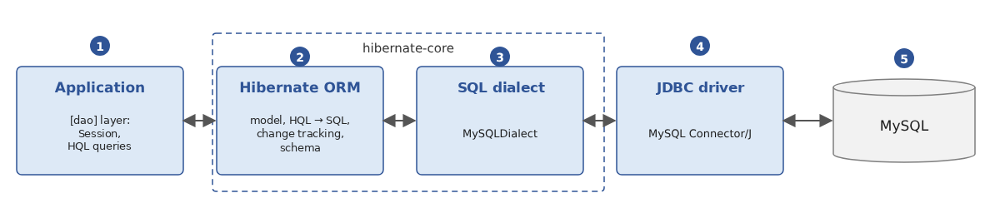

11. Hibernate
Voraussetzungen: Version 7 der Anwendung [Tax], die am Ende dieses Kapitels vorgestellt wird, verwendet die Module [tax-dao], [tax-business] und [tax-ui] aus Version 5 (Kapitel 6) wieder. Bevor Sie Ihre Projekte erstellen oder öffnen, müssen Sie Version 5 im lokalen Maven-Repository installiert haben, und zwar mit dem Befehl [mvn install] im Ordner [06-architectures/TaxV5] (siehe Kapitel 6, Abschnitt zu [mvn install]).
Das vorherige Kapitel hat gezeigt, wie eine Java-Anwendung über einen JDBC-Treiber mit einer Datenbank kommuniziert: Man öffnet eine Verbindung, sendet SQL-Befehle, liest die Ergebniszeilen Spalte für Spalte und kopiert sie in Objekte. Dieses Kopieren – von Zeilen zu Objekten und von Objekten zu den Befehlen [INSERT], [UPDATE] und [DELETE] – ist repetitiv. Es lässt sich mit einem Werkzeug automatisieren: einem „Object-Relational Mapper“ (ORM). Dieses Kapitel stellt den in der Java-Welt am weitesten verbreiteten ORM vor, Hibernate, sowie den Standard, den er implementiert, Jakarta Persistence.
Das Kapitel greift die Beispieldatenbank mit den Artikeln aus Kapitel 10 wieder auf und schließt mit Version 7 der Steuerberechnungsanwendung, deren ORM-Schicht Hibernate verwendet.
11.1. Was ist ein ORM?
11.1.1. Objekte und Tabellen
Eine Java-Anwendung arbeitet mit Objekten: Ein Artikel hat einen Namen, einen Preis und einen Bestand; eine Bestellung hat einen Kunden und eine Liste von Positionen, die jeweils auf einen Artikel verweisen. Eine relationale Datenbank speichert dieselben Informationen in Tabellen: eine Zeile in der Tabelle [articles] pro Artikel, eine Zeile in der Tabelle [orders] pro Bestellung, wobei die Beziehungen zwischen den Zeilen durch Fremdschlüssel ausgedrückt werden. Die beiden Welten passen nicht ganz zusammen:
- Ein Objekt verweist direkt auf andere Objekte ([order.getClient()]); eine Zeile enthält den Wert des Primärschlüssels einer anderen Zeile ([client_id]);
- ein Objekt kann eine Collection enthalten ([order.getLines()]); eine Tabelle enthält nur einzelne Werte; die Collection wird durch die Zeilen einer anderen Tabelle dargestellt, die auf die Bestellung verweisen;
- die Java-Typen ([String], [BigDecimal], [LocalDate], [boolean]) und die SQL-Typen ([varchar(30)], [decimal(10,2)], [date], [bit]) sind nicht dieselben;
- Objekte werden mit Java (und der Stream-API) abgefragt, Tabellen dagegen mit SQL.
Ein ORM schlägt die Brücke zwischen den beiden Welten. Wir definieren die Zuordnung zwischen Klassen und Tabellen (das Modell, oder „Mapping“) ein für alle Mal; er übernimmt dann:
- die Übersetzung von Abfragen, die in einer Sprache geschrieben sind, die sich auf Objekte bezieht (HQL), oder die durch Java-Code erzeugt werden (die Criteria-API);
- die Erzeugung von Objekten aus den gelesenen Zeilen (das nennt man Materialisierung);
- das Speichern der gelesenen Objekte und das Erkennen derjenigen, die geändert, hinzugefügt oder gelöscht wurden;
- die Erzeugung der Befehle [INSERT], [UPDATE] und [DELETE] , die diese Änderungen in der Datenbank nachvollziehen;
- und gegebenenfalls das Erstellen und Aktualisieren des Datenbankschemas (Tabellen, Spalten, Indizes) anhand der Klassen.
Die Architektur einer Anwendung, die Hibernate mit MySQL verwendet, sieht wie folgt aus:

- [1]: die Anwendung. Ihre Schicht [dao] kommuniziert nicht mehr direkt mit dem JDBC-Treiber, sondern mit Hibernate, über ein [Session]-Objekt und HQL-Abfragen;
- [2]: Hibernate, DBMS-unabhängig: Modell, Abfrageübersetzung, Änderungsverfolgung, Schemagenerierung;
- [3]: der für das DBMS spezifische Dialekt (hier [MySQLDialect]): Er kennt die SQL-Syntax des DBMS, seine Spaltentypen und seine Funktionen. Die Dialekte der wichtigsten DBMS sind Teil von Hibernate selbst: Dem Projekt muss nichts hinzugefügt werden;
- [4]: der JDBC-Treiber für das DBMS, der aus Kapitel 10 (MySQL Connector/J): Hibernate ersetzt JDBC nicht, sondern verwendet es;
- [5]: das DBMS.
11.1.2. Jakarta Persistence und Hibernate
Hibernate wurde 2001 von Gavin King als Antwort auf die Schwerfälligkeit der „Entity Beans“ der damaligen Java-EE-Plattform geschaffen. Sein Erfolg war so groß, dass seine Konzepte in einen Standard übernommen wurden, JPA (Java Persistence API), der 2006 mit Java EE 5 erschien. Als Java EE an die Eclipse Foundation übergeben und in Jakarta EE umbenannt wurde, wurde aus JPA Jakarta Persistence, und seine Pakete wechselten von [javax.persistence] zu [jakarta.persistence] (Version 3.0, 2020). Die aktuelle Version ist Jakarta Persistence 3.2 (2024).
Jakarta Persistence ist eine Spezifikation: eine Gruppe von Schnittstellen ([EntityManagerFactory], [EntityManager] ...), Annotationen ([@Entity], [@Id], [@Column] ...) und einer Abfragesprache, JPQL. Sie wird von mehreren Produkten implementiert: Hibernate ORM (das am weitesten verbreitete, in Spring Boot und Quarkus verwendet), EclipseLink (die Referenzimplementierung) ... Dieser Kurs verwendet Hibernate ORM 7.4.5, das Jakarta Persistence 3.2 implementiert.
Hibernate bietet zwei Möglichkeiten der Nutzung:
- ausschließlich über die Standardschnittstellen: In diesem Fall hängt der Code nur von [jakarta.persistence] ab, und ein Wechsel der Implementierung wäre prinzipiell möglich;
- über die eigene, funktionsreichere „native“ API, deren Schnittstellen die des Standards erweitern: Eine [SessionFactory] ist eine [EntityManagerFactory], und eine [Session] ist ein [EntityManager].
Wir verwenden die eigene API von Hibernate, wie in dessen Dokumentation empfohlen: Sie stellt alle Standardmethoden bereit ([persist], [find], [merge], [remove] ...) sowie die Erweiterungen von Hibernate. Die Annotationen sind jedoch stets die des Standards. Die folgende Tabelle zeigt die Entsprechungen:
Jakarta Persistence | Hibernate | Rolle |
[EntityManagerFactory] | [SessionFactory] | Hibernate-Konfiguration für eine Datenbank: ein schwergewichtiges Objekt, das einmal erstellt und von der gesamten Anwendung gemeinsam genutzt wird |
[EntityManager] | [Session] | Eine Datenbanksitzung: ein leichtgewichtiges, kurzlebiges Objekt |
[EntityTransaction] | [Transaction] | eine Transaktion |
JPQL | HQL | die Abfragesprache; HQL ist eine Obermenge von JPQL |
[CriteriaBuilder] | [HibernateCriteriaBuilder] | Erstellung von Abfragen mit Java-Code |
11.1.3. Bibliotheken
Die in diesem Kapitel verwendeten Bibliotheken sind die folgenden (sie sind im Anhang zu den Maven-Abhängigkeiten zusammengefasst):
Maven-Abhängigkeit | Rolle |
[org.hibernate.orm:hibernate-core] 7.4.5.Final | Hibernate selbst; es enthält die API von Jakarta Persistence 3.2 ([jakarta.persistence-api]) und seine eigenen Abhängigkeiten (Byte Buddy für die Klassengenerierung, ANTLR für die Abfrageanalyse, JBoss Logging für das Logging usw.) |
[com.mysql:mysql-connector-j] 9.7.0 | der JDBC-Treiber für MySQL, derselbe wie in Kapitel 10 |
[ch.qos.logback:logback-classic] 1.5.38 | Logback, das das Hibernate-Log empfängt |
Hibernate schreibt sein Log (ausgeführte SQL-Befehle, Warnungen usw.) über JBoss Logging, eine kleine Bibliothek, die Meldungen einfach an das Logging-System weiterleitet, das sie im Klassenpfad findet: Log4j 2, Logback (über SLF4J) oder, wenn keines vorhanden ist, das des JDK, also [java.util.logging]. Ohne Konfiguration gibt Letzteres jede Meldung auf zwei Zeilen aus, in den meisten Konsolen in Rot, was die Programmausgabe schwer lesbar macht. Wir fügen unseren Projekten daher Logback hinzu und konfigurieren es über eine Datei [logback.xml].
11.1.4. Code First oder Database First
Das Modell (die Abbildung zwischen Klassen und Tabellen) kann auf zwei Arten aufgebaut werden:
- Code First: Wir schreiben die Java-Klassen, und Hibernate leitet daraus das Datenbankschema ab, das es selbst erstellen kann. Dies ist der Ansatz, der in diesem Kapitel verfolgt wird;
- Database First: Die Datenbank existiert bereits, und Sie generieren die Klassen aus ihrem Schema mithilfe der Reverse-Engineering-Werkzeuge von Hibernate (Hibernate Tools) oder der von Entwicklungsumgebungen (IntelliJ IDEA kann Entitäten aus Datenbanktabellen generieren). Dies ist der Ansatz für Anwendungen, die mit einer bestehenden Datenbank arbeiten müssen. Der generierte Code ähnelt dem, den wir von Hand schreiben würden.
11.2. Ein erstes Beispiel
11.2.1. Das Projekt
Die Beispiele in diesem Kapitel sind Module eines Maven-Projekts mit mehreren Modulen (siehe Kapitel 6) und befinden sich im Ordner [11-hibernate]:
Das Elternprojekt legt die Versionen der Bibliotheken und Maven-Erweiterungen für alle Module fest:
1 2 3 4 5 6 7 8 9 10 11 12 13 14 15 16 17 18 19 20 21 22 23 24 25 26 27 28 29 30 31 32 33 34 35 36 37 38 39 40 41 42 43 44 45 46 47 48 49 50 51 52 53 54 55 56 57 58 59 60 61 62 63 64 65 66 67 68 69 70 71 72 73 74 75 76 77 78 79 80 81 82 83 84 85 86 87 88 89 90 91 92 93 94 95 96 97 98 99 100 101 102 103 104 105 106 107 108 109 110 111 112 113 114 115 116 117 118 119 120 | |
- Zeilen 14–30: die Module, in der Reihenfolge, in der Maven sie bauen soll: zuerst die beiden gemeinsamen Bibliotheken;
- Zeilen 38–87: Der Abschnitt [dependencyManagement] gibt die Version jeder Bibliothek an. Ein Modul, das sie benötigt, referenziert sie ohne Version;
- Zeilen 108–116: Die Erweiterung [exec-maven-plugin] führt die Klasse aus, die durch die Eigenschaft [exec.mainClass] angegeben wird, welche jedes Modul definiert.
Das erste Beispiel ist das Modul [first]. Es ist von den anderen unabhängig:
- Zeilen 8–12: das Elternprojekt;
- Zeile 18: die Hauptklasse des Moduls;
- Zeilen 22–35: Hibernate, der JDBC-Treiber für MySQL und Logback, ohne Versionsnummer (sie wird vom Elternprojekt bereitgestellt).
Um ein Beispiel auszuführen, bauen Sie einmalig alle Module im Ordner [11-hibernate] ([mvn install] installiert die gemeinsamen Bibliotheken im lokalen Maven-Repository) und wechseln Sie dann in den Ordner des Moduls:
Die verwendete Datenbank ist die Datenbank [hbfirst] auf dem lokalen MySQL-Server, also dem Laragon-Server (siehe Anhänge). Sie muss noch nicht existieren: MySQL legt sie an.
11.2.2. Die Entität [Article]
Eine Klasse, deren Objekte in einer Tabelle gespeichert werden, heißt Entität. Unsere erste Entität ist ein Artikel eines Geschäfts, wie in der Tabelle [articles] in Kapitel 10:
- Zeile 10: Die Annotation [@Entity] (Paket [jakarta.persistence]) kennzeichnet die Klasse als Entität. Sie ist fast eine gewöhnliche Java-Klasse, die von keiner Hibernate-Klasse erbt: Man spricht von einem POJO („Plain Old Java Object“);
- Zeilen 14–16: Der Primärschlüssel wird durch die Annotation [@Id] gekennzeichnet. Es gibt keine Namenskonvention: Die Annotation ist erforderlich. [@GeneratedValue(strategy = GenerationType.IDENTITY)] gibt an, dass seine Werte vom DBMS generiert werden (Spalte [AUTO_INCREMENT] von MySQL). Sein Typ ist [Integer], nicht [int]: Der Wert [null] bedeutet „noch nicht in der Datenbank gespeichert“;
- Zeilen 18–21: Jedes Feld der Klasse wird zu einer Spalte mit demselben Namen. Da die Annotation [@Id] auf ein Feld angewendet wird, greift Hibernate direkt auf die Felder zu (es liest und schreibt sie per Reflection, auch wenn sie privat sind): Die Klasse benötigt keine Zugriffsmethoden;
- Zeilen 24–25: Jakarta Persistence verlangt einen parameterlosen Konstruktor, den Hibernate verwendet, um aus der Datenbank gelesene Objekte zu erzeugen. Er kann geschützt sein ([protected]): Der Anwendungscode wird ihn nicht verwenden;
- Zeilen 28–33: der vom Programm verwendete Konstruktor. Es wird keine Kennung übergeben; sie wird vom DBMS generiert;
- Zeilen 36–39: eine praktische Darstellung des Artikels. Das Format [%.2f] gibt den Preis mit zwei Nachkommastellen aus, entsprechend den lokalen Konventionen (in Deutschland mit einem Komma).
Eine Entität kann kein Record sein (Kapitel 4): Hibernate muss das leere Objekt erzeugen, seine Felder füllen und diese Felder ändern können, wenn die Anwendung sie ändert – etwas, das die Unveränderlichkeit eines Records verhindert. Records bleiben mit Hibernate für Abfrageergebnisse, die keine Entitäten sind (Projektionen), sehr nützlich, wie wir sehen werden.
11.2.3. [SessionFactory] und [Session]
Das Programm verwendet drei Hibernate-Objekte:
- [SessionFactory] stellt Hibernate dar, konfiguriert für eine Datenbank: die Liste der Entitäten, die Datenbank und die Optionen. Ihre Erstellung ist ressourcenintensiv (Hibernate analysiert die Entitäten, verbindet sich mit dem Server, um dessen Version zu ermitteln, und bereitet das SQL für gängige Operationen vor): Pro Datenbank und Anwendung wird nur eine einzige beim Start erstellt. Sie ist threadsicher: Alle Threads der Anwendung können sie verwenden;
- die [Session] stellt eine Arbeitssitzung mit der Datenbank dar. Sie bezieht bei Bedarf eine Verbindung, verwaltet die von ihr gelesenen oder gespeicherten Entitäten und weiß, wie deren Änderungen in die Datenbank übertragen werden. Sie ist ein leichtgewichtiges, kurzlebiges Objekt, das nicht threadsicher ist: Für jede Arbeitseinheit wird eine geöffnet und anschließend geschlossen;
- [Transaction]: Mit Hibernate erfolgen alle Schreibzugriffe auf die Datenbank innerhalb einer expliziten Transaktion, die mit [session.beginTransaction()] geöffnet und mit [commit] (Bestätigung) oder [rollback] (Rücknahme) abgeschlossen wird.
[SessionFactory] und [Session] implementieren die Schnittstelle [AutoCloseable]: Sie werden in einer [try]-Anweisung mit Ressourcen erstellt, die sie am Ende des Blocks schließt.
11.2.4. Das Programm
- Zeilen 14–22: Erstellung der [SessionFactory]. Hibernate lässt sich auf mehrere Arten konfigurieren (wir kommen später darauf zurück); wir verwenden die Klasse [HibernatePersistenceConfiguration] aus Hibernate 7, eine erweiterte Version der mit Jakarta Persistence 3.2 eingeführten Klasse [PersistenceConfiguration], die es erlaubt, alles per Code zu konfigurieren. Ihr Parameter ist der Name der Persistenzeinheit – ein frei gewählter Name, der in den Hibernate-Meldungen erscheint. Jede Methode gibt die Konfiguration selbst zurück, sodass sich Aufrufe verketten lassen;
- Zeile 16: die Liste der Entitäten;
- Zeilen 18–19: die JDBC-URL der Datenbank [hbfirst], im selben Format wie in Kapitel 10, und der Benutzer ([root], in Laragon ohne Passwort). Der Parameter [createDatabaseIfNotExist=true] der URL ist eine Option des MySQL-Treibers: Er legt die Datenbank an, falls sie nicht existiert;
- Zeile 21: [showSql(true, true, false)] weist Hibernate an, jeden ausgeführten SQL-Befehl auf der Konsole auszugeben, über mehrere Zeilen formatiert (zweiter Parameter) und ohne Farben (dritter Parameter). Der Blick auf das an den Server gesendete SQL ist der beste Weg, um zu verstehen, was Hibernate tut: Wir werden dies in allen Beispielen tun;
- Zeile 22: [createEntityManagerFactory] erstellt die [SessionFactory] (der Methodenname stammt aus dem Standard; der zurückgegebene Typ ist der von Hibernate);
- Zeilen 25–26: Das Objekt [SchemaManager] der [SessionFactory] (Jakarta Persistence 3.2) verwaltet die Tabellen der Entitäten: [drop(false)] löscht sie, falls sie existieren, [create(false)] legt sie an (der Parameter [false] legt fest, dass die Datenbank selbst weder gelöscht noch angelegt werden soll). Das ist praktisch für Beispiele und Tests; eine reale Anwendung verwaltet ihre Datenbank anders, wie wir sehen werden;
- Zeile 29: [openSession()] öffnet eine Sitzung;
- Zeile 30: der Beginn einer Transaktion;
- Zeilen 32–34: [persist] fügt der Sitzung drei neue Artikel hinzu: Sie werden in der Datenbank gespeichert. Für die Kennung wird kein Wert angegeben; sie wird vom DBMS generiert;
- Zeile 36: [commit] bestätigt die Transaktion. Zuvor sendet die Sitzung die SQL-Befehle an den Server, die noch erforderlich sind, um die von ihr verwalteten Änderungen zu speichern: Man spricht vom „Flushen“ der Sitzung in die Datenbank;
- Zeilen 42–44: eine in HQL, der Abfragesprache von Hibernate, geschriebene Abfrage: die Artikel in alphabetischer Reihenfolge nach Namen. Sie bezieht sich auf die Entität [Article] und ihr Feld [name], nicht auf die Tabelle. Der zweite Parameter von [createSelectionQuery] ist der Ergebnistyp: [getResultList] gibt eine [List<Article>] zurück.
Die Datei [src/main/resources/logback.xml] im Modul konfiguriert Logback. Sie gibt Hibernate-Meldungen der Stufe [INFO] oder höher aus, eine pro Zeile (Stufe, Log-Name, Meldung):
Ergebnisse:
Kommentare:
- Zeilen 2–17: Informationsmeldungen von Hibernate: der Name der Persistenzeinheit, die Hibernate-Version und Merkmale der Datenbank (URL, Treiber, gewählter Dialekt, Serverversion, Transaktionsisolationsstufe, Größe des Verbindungspools). Hibernate hat den Server abgefragt, um den zu dessen Version passenden Dialekt [MySQLDialect] auszuwählen;
- Zeile 4: eine Warnung. Hibernate verwaltet einen eigenen kleinen Verbindungspool, der nicht für eine Produktionsanwendung gedacht ist. Wir werden mit Spring sehen, wie ihm der HikariCP-Pool aus Kapitel 10 bereitgestellt wird; für unsere Beispiele genügt der eingebaute Pool;
- Zeilen 18–28: Löschen und anschließendes Anlegen der Tabelle [Article] auf Grundlage der Entität: Der Tabellenname entspricht dem Namen der Entität, die Spalten haben dieselben Namen wie die Felder, und die Spalte [id] ist der Primärschlüssel mit einem generierten Wert ([auto_increment]). Die Spalten für Felder primitiver Typen ([int]) sind [not null]: Ein [int] kann nicht [null] sein. Die für Felder von Referenztypen ([String], [BigDecimal]) akzeptieren den Wert [NULL];
- beachten Sie die Standardtypen: [varchar(255)] für eine Zeichenkette und [decimal(38,2)] für ein [BigDecimal] (38 Ziffern, davon 2 Nachkommastellen). Das sind selten die gewünschten: Der folgende Absatz zeigt, wie man sie festlegt;
- Zeilen 29–51: Die drei konfigurierten [INSERT]-Befehle wurden sofort beim Aufruf von [persist] ausgeführt, vor dem [commit]. Das ist eine Folge der Schlüsselgenerierung durch das DBMS ([IDENTITY]): Die Sitzung muss die Kennung einer Entität kennen, sobald sie diese übernimmt, und um sie zu erhalten, muss sie die Einfügeoperation ausführen (der JDBC-Treiber gibt den generierten Schlüssel zurück; siehe Kapitel 10). Bei anderen Generierungsmethoden werden die Einfügeoperationen bis zur Synchronisierung der Sitzung zurückgestellt. Die Parameterwerte ([?]) werden nicht angezeigt: Wir werden sehen, wie man sie sichtbar macht;
- Zeilen 53–63: Die HQL-Abfrage [from Article order by name] wurde in eine Anweisung [SELECT ... ORDER BY] übersetzt. Hibernate hat der Tabelle den Alias [a1_0] zugewiesen und für jede gelesene Zeile ein [Article]-Objekt erzeugt (Zeilen 64–66).
Wir haben weder SQL-Befehle noch Code zum Lesen von Spalten geschrieben: Genau darin liegt der Sinn eines ORM. Wir sehen aber auch, dass dies nicht bedeutet, SQL nicht zu benötigen: Um zu beurteilen, ob das generierte SQL korrekt und effizient ist, müssen Sie es lesen können.
11.3. Das Modell
Hibernate baut sein Modell aus den Entitäten in drei Schritten auf:
- Zunächst wendet es seine Standardregeln an: Allem, was nicht angegeben ist, wird ein vernünftiger Wert zugewiesen (man spricht von „Konfiguration per Ausnahme“);
- anschließend ergänzt oder korrigiert es diese Werte anhand der Annotationen an den Entitäten;
- schließlich wendet es die XML-Mapping-Dateien ([orm.xml]) an, die eine Klasse ohne Annotationen vollständig beschreiben oder das ändern können, was ihre Annotationen festlegen.
11.3.1. Standardregeln
Die Grundlagen haben wir im ersten Beispiel gesehen:
- Eine Entität trägt die Annotation [@Entity] und hat eine durch [@Id] gekennzeichnete Kennung; beide Annotationen sind erforderlich;
- Die Platzierung der Annotation [@Id] bestimmt den Zugriffsmodus: Steht sie an einem Feld, liest und schreibt Hibernate die Felder direkt; steht sie an einer Zugriffsmethode ([getId]), verwendet es die Zugriffsmethoden ([getX]/[setX]). Der Zugriff über Felder ist der häufigste: Er erlaubt der Klasse, beliebige Methoden zu haben;
- Jedes nicht statische Feld wird in einer Spalte gespeichert, es sei denn, es trägt die Annotation [@Transient] oder das Schlüsselwort [transient];
- Der Tabellenname ist der Name der Entität (der einfache Name der Klasse), und der Spaltenname ist der Feldname. Diese Namen durchlaufen anschließend eine Namensstrategie: Die Strategie von Hibernate behält die Namen unverändert bei, während eine andere Strategie – die wir weiter unten ausprobieren – sie in „Snake Case“ umwandelt ([currentStock] wird zu [current_stock]). Spring Boot verwendet standardmäßig Letztere;
- Eine Spalte eines primitiven Typs ([int], [double], [boolean]) wird zu [NOT NULL]; eine Spalte eines Referenztyps ([Integer], [String], [BigDecimal], [LocalDate]) akzeptiert den Wert [NULL];
- Die SQL-Typen werden vom Dialekt gewählt. Mit MySQL: [integer] für [int], [bigint] für [long], [bit] für [boolean], [varchar(255)] für [String], [decimal(38,2)] für [BigDecimal], [date] für [LocalDate], [datetime(6)] (mikrosekundengenau) für [LocalDateTime]. Eine Enumeration wird standardmäßig über ihre laufende Nummer gespeichert (siehe Kapitel 3); die Annotation [@Enumerated(EnumType.STRING)] speichert sie über ihren Namen, was zuverlässiger ist;
- Ein Feld, das auf eine andere Entität oder auf eine Sammlung von Entitäten verweist, definiert eine Beziehung (darauf kommen wir später zurück).
11.3.2. Die Annotationen und die XML-Mapping-Datei
Das Modul [model] definiert zwei Entitäten, die auf zwei verschiedene Arten konfiguriert sind. Die erste wird über Annotationen konfiguriert:
- Zeilen 3–9: Annotationen von Jakarta Persistence;
- Zeile 15: [@Table] legt den Tabellennamen fest;
- Zeilen 19–21: der Primärschlüssel, unabhängig von seinem Namen als [@Id] gekennzeichnet;
- Zeilen 24–25: [@Column] legt die Spalte fest; [nullable = false] macht sie zur Pflichtspalte ([NOT NULL]); [length = 50] legt ihre Länge fest ([varchar(50)]);
- Zeilen 28–29: eine optionale Beschreibung von bis zu 200 Zeichen; die Spalte akzeptiert den Wert [NULL];
- Zeilen 32–33: [@Column] legt außerdem den Spaltennamen fest ([price_excl_tax]) und bei einer Dezimalzahl ihre Genauigkeit (die Gesamtzahl der Ziffern) und ihre Skalierung (die Anzahl der Nachkommastellen): [decimal(10,2)];
- Zeile 36: ein optionales Datum. Der Typ [LocalDate] (Kapitel 5) stellt ein Datum ohne Uhrzeit dar: Er wird dem SQL-Typ [date] zugeordnet;
- Zeilen 39–40: [@Transient] schließt ein Feld aus dem Modell aus: in diesem Fall eine für die Benutzeroberfläche nützliche Information, die nicht in die Datenbank gehört;
- Zeilen 46–48: Eine Methode wird nicht erfasst, auch wenn sie wie ein Getter benannt ist, da Hibernate direkt auf die Felder zugreift. Bei einem Zugriff über Getter müsste ihr die Annotation [@Transient] hinzugefügt werden.
Die zweite Entität hat keine Annotationen:
Ihre Abbildung auf die Tabelle wird durch eine XML-Datei beschrieben, die sich im Ordner [src/main/resources/META-INF] des Moduls befindet:
- Zeilen 3–7: das XML-Schema für die Mapping-Dateien von Jakarta Persistence 3.2;
- Zeile 8: die beschriebene Klasse, mit Zugriff über Felder;
- Zeilen 9–12: die Tabelle und ein eindeutiger Index auf dem Firmennamen: Keine zwei Lieferanten dürfen denselben haben. Die entsprechende Annotation lautet [@Table(name = "suppliers", indexes = @Index(...))];
- Zeilen 14–16: die vom DBMS generierte Kennung;
- Zeilen 17–19: eine Pflichtspalte mit höchstens 60 Zeichen;
- Zeilen 20–22: Das Feld [phone] wird in der Spalte [tel] gespeichert;
- Zeilen 24–27: Das Erstellungsdatum hat einen vom DBMS berechneten Standardwert. Das Attribut [column-definition] liefert den SQL-Text der Spaltendefinition, der wörtlich in den Befehl [CREATE TABLE] übernommen wird; [insertable="false"] und [updatable="false"] geben an, dass Hibernate niemals in diese Spalte schreiben darf, wodurch das DBMS [current_timestamp(6)] verwenden kann.
Alles, was Annotationen leisten, lässt sich auch in XML umsetzen. Annotationen haben den Vorteil, die Konfiguration direkt neben dem Feld zu platzieren, und dies ist der gängigste Ansatz; die XML-Datei hält dagegen die Klassen unabhängig von Jakarta Persistence und bündelt die Konfiguration an einer einzigen Stelle. Beide Ansätze lassen sich kombinieren: Bei einem Konflikt hat die XML-Datei Vorrang. Jakarta Persistence unterstützt die Konfiguration des Modells über Java-Code nicht, wie es andere Frameworks (etwa Entity Framework in C#) tun.
Das Programm zeigt das von Hibernate aufgebaute Modell an, gefolgt vom SQL-Skript, das die Tabellen anlegen würde:
- Zeile 16: ein [StringWriter] (Paket [java.io]), ein Schreibstrom auf eine Zeichenkette im Speicher, nimmt das SQL-Skript auf;
- Zeilen 20–21: Die annotierte Entität wird mit [managedClass] deklariert, die XML-Datei mit [mappingFile];
- Zeilen 23–25: Die Datenbank [hbmodel] wird nie existieren; diese [SessionFactory] dient ausschließlich dazu, das Modell zu untersuchen. Daher gibt es keine JDBC-URL. Um den SQL-Dialekt ohne Abfrage des Servers auszuwählen, benötigt Hibernate den Namen des DBMS und dessen Version; die Eigenschaft [ALLOW_METADATA_ON_BOOT] ([hibernate.boot.allow_jdbc_metadata_access]) verhindert, dass es sich beim Start verbindet. Die Namen der Konfigurationseigenschaften sind Konstanten der Schnittstelle [AvailableSettings];
- Zeilen 27–28: die Namenskonvention „Snake Case“;
- Zeilen 30–33: Hibernate schreibt das Skript zur Tabellenerstellung (["create"]) in das Objekt [script], ohne es auszuführen; die Befehle werden durch ein Semikolon abgeschlossen und über mehrere Zeilen formatiert;
- Zeile 37: Die Methode [getMetamodel] (Jakarta Persistence) gewährt Zugriff auf das Modell: seine Entitäten ([EntityType]) und für jede davon ihre Attribute ([Attribute]);
- Zeilen 38–43: Für jede Entität ihr Name und ihre Klasse; für jedes Attribut sein Name, sein Java-Typ und die Angabe, ob es die Kennung ist. Das Pattern Matching in Zeile 40 ([instanceof SingularAttribute<?, ?> s && s.isId()], Kapitel 4) prüft den Typ des Attributs und verwendet es gegebenenfalls sofort;
- Zeilen 48–50: das Skript in der ausgegebenen Form, ohne die vier Leerzeichen Einrückung, die Hibernate seinen Zeilen hinzufügt.
Ergebnisse:
- Zeile 2: Die Hibernate-Warnung bestätigt, dass es keine Möglichkeit hat, eine Verbindung zu erhalten;
- Zeilen 3–13: die beiden Entitäten und ihre Attribute (zuerst die Kennung, dann die übrigen in alphabetischer Reihenfolge). Das Feld [selected] und die Methode [getPriceInclTax] erscheinen nicht im Modell;
- Zeilen 15–21: die Tabelle [suppliers], beschrieben durch die XML-Datei. Die Namensstrategie hat [companyName] und [creationDate] in [company_name] und [creation_date] umgewandelt; die Spalte [tel], deren Name festgelegt ist, bleibt unverändert. Die Definition der Spalte [creation_date] ist die aus der XML-Datei, ergänzt um [not null];
- Zeilen 23–30: die Tabelle [products]. Die SQL-Typen stammen aus Annotationen ([varchar(50)], [decimal(10,2)]) oder aus der Wahl des Dialekts für einen Java-Typ ([integer], [date]);
- Zeilen 32–33: der eindeutige Index, der unter MySQL durch eine Eindeutigkeitsbedingung ([unique]) erstellt wird.
11.3.3. Generierte Kennungen
Die Annotation [@GeneratedValue] gibt an, dass der Wert der Kennung generiert wird. Ihr Parameter [strategy] legt fest, wie:
Strategie | Generierung der Kennung |
[IDENTITY] | durch das DBMS beim Einfügen der Zeile (Spalte [AUTO_INCREMENT] von MySQL, [IDENTITY] von SQL Server und PostgreSQL) |
[SEQUENCE] | durch eine Sequenz des DBMS (PostgreSQL, Oracle), die Hibernate vor dem Einfügen abfragt |
[TABLE] | durch eine von Hibernate verwaltete Zählertabelle |
[UUID] | durch Hibernate: eine zufällige universelle Kennung, etwa [java.util.UUID] |
[AUTO] (Standard) | Hibernate wählt; bei MySQL, das keine Sequenzen kennt, simuliert es sie mithilfe einer Tabelle namens [<table>_SEQ] |
Mit MySQL verwenden wir weiterhin [IDENTITY], was dem natürlichen Verhalten der Spalte [AUTO_INCREMENT] entspricht. Die Folge haben wir gesehen: Der Befehl [INSERT] wird ausgeführt, sobald [persist] aufgerufen wird, und Hibernate kann mehrere Einfügeoperationen nicht zu einem Batch zusammenfassen (Batches behandeln wir später). Die Strategie [SEQUENCE], die es erlaubt, die Kennung vor dem Einfügen zu kennen, wird für DBMS bevorzugt, die Sequenzen verwenden.
11.3.4. Optionale Werte und Spalten mit [NULL]
Ob eine Spalte optional ist, wird in Java also durch den Feldtyp (primitiv oder Referenz) und durch das Attribut [nullable] von [@Column] bestimmt. Diese Entscheidung muss sorgfältig getroffen werden: Die Regel drückt zugleich eine Einschränkung im Java-Code („dieser Wert kann fehlen“) und eine Einschränkung in der Datenbank aus. Einige Hinweise:
- [@Column(nullable = false)] definiert die Bedingung [NOT NULL] im von Hibernate erstellten Schema, und Hibernate nutzt sie auch, bevor es einen Befehl [INSERT] oder [UPDATE] sendet: Ist das Feld [null], sendet es den Befehl nicht und löst eine [PropertyValueException] („not-null property references a null or transient value“) aus. Diese Prüfung von Hibernate ist standardmäßig deaktiviert, wenn Jakarta Validation (siehe unten) vorhanden ist: Die Validierung greift dann auf dessen Annotationen zurück oder, falls es solche nicht gibt, auf das DBMS, das den Befehl ablehnt;
- Für eine umfassendere Validierung durch Java vor jedem Datenbankzugriff verwenden wir Jakarta Validation (Bibliothek [hibernate-validator]) und seine Annotationen [@NotNull], [@Size(max = 30)], [@Positive] ... Ist sie im Klassenpfad vorhanden, validiert Hibernate Entitäten vor dem Speichern und berücksichtigt diese Annotationen beim Anlegen der Spalten;
- Ein Feld kann nicht vom Typ [Optional] sein (Kapitel 4), da dieser nicht für diesen Zweck gedacht ist; eine Zugriffsmethode kann jedoch ein aus einem optionalen Feld erzeugtes [Optional] zurückgeben: [return Optional.ofNullable(description);].
11.4. Die folgenden Beispiele: zwei gängige Bibliotheken
Die Beispiele in den folgenden Absätzen verwenden fast alle die Datenbank [hbarticles] und ihre Tabelle [articles], befüllt mit den sechs Artikeln aus Kapitel 10. Statt die Hibernate-Entität und die Konfiguration in jedem Modul zu wiederholen, legen wir sie in eine Bibliothek – das Modul [articles] –, von der die anderen Module abhängen. Außerdem ersetzen wir das SQL-Log von [showSql] – das für unsere Beispiele zu ausführlich ist – durch ein kompakteres Log, das in einer zweiten Bibliothek liegt, dem Modul [tools].
11.4.1. Das kompakte SQL-Log
Anstatt direkt auf die Konsole zu schreiben ([showSql]), kann Hibernate seine Aktivität an das Logging-System weiterleiten (hier Logback), wobei jede Meldungskategorie in einen anderen Logger geschrieben wird:
Log | Stufe | Meldungen |
[org.hibernate.SQL] | [DEBUG] | ausgeführte SQL-Befehle |
[org.hibernate.orm.jdbc.bind] | [TRACE] | der Wert jedes Parameters eines SQL-Befehls |
[org.hibernate.orm.resource.jdbc] | [TRACE] | unter anderem Beginn, Bestätigung und Abbruch von Transaktionen |
[org.hibernate.orm.jdbc.batch] | [TRACE] | Ausführung von SQL-Befehlsstapeln |
[org.hibernate.orm.jdbc.error] | [WARN] | vom DBMS gemeldete Fehler |
Ein Log erfasst nur Meldungen einer Stufe, die der eigenen entspricht oder höher ist. Um diese Meldungen zu erfassen, genügt es daher, in der Datei [logback.xml] die gewünschte Stufe für diese Logs festzulegen. Wir verarbeiten sie über eine Layout-Klasse, die sie kompakter macht:
1 2 3 4 5 6 7 8 9 10 11 12 13 14 15 16 17 18 19 20 21 22 23 24 25 26 27 28 29 30 31 32 33 34 35 36 37 38 39 40 41 42 43 44 45 46 47 48 49 50 51 52 53 54 55 56 57 58 59 60 61 62 63 64 65 66 67 68 69 70 71 72 73 74 75 76 77 78 79 80 81 82 83 84 85 86 87 88 89 90 91 92 93 94 95 96 97 98 99 100 101 102 103 104 105 106 107 108 109 110 111 112 113 114 115 116 117 118 119 120 121 122 123 124 125 126 127 128 129 130 131 132 133 134 135 136 137 138 139 140 141 142 | |
- Zeile 16: Eine Logback-Layout-Klasse leitet sich von der Klasse [LayoutBase<ILoggingEvent>] ab; ihre Methode [doLayout] (Zeilen 36–47) erhält jede Meldung (ein [ILoggingEvent]) und gibt den zu schreibenden Text zurück;
- Zeilen 19–23: die Namen der verwendeten Hibernate-Logs;
- Zeilen 39–46: Die Verarbeitung hängt vom Log ab, das die Meldung gesendet hat ([switch] auf eine Zeichenkette, mit der „Pfeil“-Syntax von Java 14);
- Zeilen 50–83: der SQL-Befehl, wie er von Hibernate formatiert wird ([format_sql]), über mehrere Zeilen verteilt, mit einer Spalte pro Zeile. Wir machen ihn kompakter. Nicht leere Zeilen werden in Klauseln unterteilt (Zeilen 54–61): Eine Klausel beginnt mit einer nicht eingerückten Zeile ([select], [from], [where] ...) und umfasst die eingerückten Zeilen, die ihr folgen. Jede Klausel wird dann in einer einzigen Zeile ausgegeben, der [SQL>] vorangestellt ist, sofern sie 100 Zeichen nicht überschreitet (Zeilen 72–73); andernfalls bleiben ihre Zeilen erhalten (Zeilen 76–78). Die Klauseln [insert] und [delete] werden mit der jeweils folgenden zusammengefasst (Zeilen 67–71);
- Zeilen 91–94: Die Hibernate-Meldung, die den Wert eines Parameters liefert, sieht so aus: [binding parameter (1:VARCHAR) <- [bike]]. Der reguläre Ausdruck in den Zeilen 32–33 (Kapitel 5) extrahiert die Nummer des Parameters und seinen Wert;
- Zeilen 97–108: Von den zahlreichen Meldungen des Logs [org.hibernate.orm.resource.jdbc] werden nur diejenigen beibehalten, die den Beginn, die Bestätigung und die Rücknahme einer Transaktion anzeigen. Jede Hibernate-Meldung beginnt mit einem Code ([HHH10003002] ...), der sie eindeutig kennzeichnet;
- Zeilen 111–113: ein Fehler im DBMS. Hibernate schreibt ihn als zwei Meldungen: eine mit den Fehlercodes (die wir ignorieren) und die andere mit dem Fehlertext;
- Zeilen 116–119: die Ausführung eines Stapels von SQL-Befehlen, dem wir am Ende des Kapitels begegnen werden;
- Zeilen 122–136: Die Methode [withoutLog] führt eine Aktion ohne (SQL-)Logging aus. Sie verwendet die API von Logback: Jedes Log ([Logger]) hat eine Stufe, die zur Laufzeit geändert werden kann. Wir setzen die fünf Logs auf die Stufe [OFF], führen die Aktion aus und stellen dann die ursprünglichen Stufen in einer [finally]-Klausel wieder her, sodass sie auch dann auf diesen Stufen bleiben, wenn die Aktion eine Ausnahme auslöst;
- Zeilen 139–141: [LoggerFactory] ist die Klasse von SLF4J, die ein Log zurückgibt; Da Logback die aktuelle Implementierung von SLF4J ist, ist das zurückgegebene Objekt ein [ch.qos.logback.classic.Logger].
Das Modul [tools] enthält außerdem die in den Beispielen verwendete Datei [logback.xml]. Da sie im Stammverzeichnis des Klassenpfads liegt ([src/main/resources]), wird sie von Logback beim Start des Programms gefunden:
- Zeilen 6–10: Ein „Appender“ schreibt die Meldungen, hier auf die Konsole. Er verwendet unsere Formatierung;
- Zeilen 13–17: ein zweiter „Appender“ für die übrigen Meldungen: Stufe, Kurzname des Logs, Text;
- Zeilen 20–34: die Hibernate-Logs aus der vorigen Tabelle mit ihren Stufen. Ihre Meldungen gehen an den „Appender“ [SQL] und nur an diesen ([additivity="false"]: Sie werden nicht zusätzlich an das Root-Log weitergeleitet);
- Zeile 37: Die Warnung zum eingebauten Verbindungspool von Hibernate wird unterdrückt;
- Zeile 40: Hibernate löscht Tabellen, beginnend mit ihren Fremdschlüsseln; bei einer leeren Datenbank schlagen diese Löschungen folgenlos fehl, doch Hibernate protokolliert dies ausführlich. Diese Meldungen werden unterdrückt;
- Zeilen 43–45: Die anderen Logs erfassen nur Warnungen und Fehler.
Das Modul [tools] hat nur eine Abhängigkeit: Logback. Eine Bibliothek zwingt den Anwendungen, die sie verwenden, üblicherweise nicht ihre Logging-Konfiguration auf; wir tun es hier, um diese Datei nicht in jedem Beispiel zu wiederholen.
11.4.2. Die Entität und die Artikeldatenbank
Die Entität [Article] im Modul [articles] verwendet die Annotationen aus dem vorigen Absatz. Hier ist der Anfang des Codes; der Rest enthält die beiden Konstruktoren der Entität aus dem ersten Beispiel, die Getter- und Setter-Methoden [getX]/[setX] für jedes Feld (außer [setId]: Die Kennung wird von Hibernate verwaltet) und dieselbe Methode [toString]:
- Zeilen 14–15: Die Tabelle heißt [articles], wie in Kapitel 10. Der Parameter [uniqueConstraints] deklariert eine Eindeutigkeitsbedingung namens [uk_articles_name] auf der Spalte [name]: Zwei Artikel dürfen nicht denselben Namen haben. Ohne ausdrücklichen Namen würde Hibernate einen unleserlichen erzeugen ([UK3f8k...]), der in Fehlermeldungen erscheinen würde;
- Zeilen 24–25: ein erforderlicher Name von höchstens 30 Zeichen;
- Zeilen 28–29: ein Preis in [decimal(10,2)].
Die Klasse [BaseArticles] enthält die Hibernate-Konfiguration für die Datenbank [hbarticles]:
- Zeilen 13–15: die URL der Datenbank und der Benutzer, beide öffentlich, damit andere Module sie verwenden können;
- Zeilen 22–28: die Hibernate-Konfiguration. Sie wird von einer öffentlichen Methode zurückgegeben, wodurch eine Instanz sie vervollständigen kann, bevor sie die [SessionFactory] erstellt. Die Eigenschaft [FORMAT_SQL] ([hibernate.format_sql]) weist Hibernate an, das SQL zu formatieren, das es anschließend an das Log [org.hibernate.SQL] übergibt: Diese formatierten Daten verdichtet die Klasse [SqlLog] dann;
- Zeilen 31–33: die [SessionFactory] der Datenbank [hbarticles];
- Zeilen 36–51: eine Methode, die die Tabelle [articles] mit ihren sechs Artikeln ohne SQL-Log neu anlegt: Wir möchten das SQL dieser Initialisierung nicht in den Ergebnissen des Beispiels sehen;
- Zeile 42: [sessionFactory.inTransaction(session -> ...)] öffnet eine Sitzung, startet eine Transaktion, führt das Lambda (Kapitel 7) aus, indem es ihm die Sitzung übergibt, bestätigt die Transaktion (oder nimmt sie zurück, wenn das Lambda eine Ausnahme auslöst) und schließt die Sitzung. Dies ist die kürzeste Art, eine Arbeitseinheit zu schreiben; wir werden sie häufig verwenden, zusammen mit ihren Varianten [inSession] (eine Sitzung ohne Transaktion), [fromTransaction], und [fromSession] (die das Ergebnis des Lambdas zurückgeben).
Das Modul [articles] hängt vom Modul [tools], von Hibernate und vom JDBC-Treiber ab:
Die Beispielmodule benötigen daher nur eine einzige Abhängigkeit, nämlich die des Moduls [articles]; Maven fügt dessen Abhängigkeiten hinzu (man nennt sie transitive Abhängigkeiten). Hier sind die Abhängigkeiten des Moduls [crud]:
11.4.3. Weitere Möglichkeiten, Hibernate zu konfigurieren
Wir konfigurieren Hibernate programmatisch mit [HibernatePersistenceConfiguration]. Es gibt weitere Möglichkeiten, die in Anwendungen und Dokumentationen anzutreffen sind:
- eine Datei [META-INF/persistence.xml], der traditionelle Ansatz von Jakarta Persistence: Sie beschreibt eine oder mehrere Persistenzeinheiten (Entitätsklassen, Verbindungseigenschaften, Optionen), und die Factory wird mit [Persistence.createEntityManagerFactory("articles")] erstellt;
- eine Datei [hibernate.properties] (oder [hibernate.cfg.xml]), spezifisch für Hibernate und von der Klasse [org.hibernate.cfg.Configuration] gelesen: [new Configuration().addAnnotatedClass(Article.class).buildSessionFactory()]. Dies ist der Ansatz älterer Hibernate-Versionen;
- in einer Spring-Boot-Anwendung die Eigenschaften [spring.datasource.*] und [spring.jpa.*] aus der Datei [application.properties]: Spring Boot erstellt die Factory selbst.
Die Eigenschaften sind überall dieselben ([hibernate.format_sql], [jakarta.persistence.jdbc.url] ...): Nur die Art ihrer Angabe ändert sich.
11.5. Grundlegende Operationen: hinzufügen, lesen, aktualisieren, löschen
11.5.1. Das Programm [crud]
Das Modul [crud] demonstriert die vier Grundoperationen (CRUD: Create, Read, Update, Delete) sowie die Nachverfolgung von Entitäten durch die Sitzung. Um diese Nachverfolgung sichtbar zu machen, verwendet es einige interne Hibernate-Methoden (seine „SPI“, Service Provider Interface), die für Hibernate-Erweiterungen und nicht für Anwendungen gedacht sind: Sie sind in den Hilfsmethoden am Ende des Programms zusammengefasst.
1 2 3 4 5 6 7 8 9 10 11 12 13 14 15 16 17 18 19 20 21 22 23 24 25 26 27 28 29 30 31 32 33 34 35 36 37 38 39 40 41 42 43 44 45 46 47 48 49 50 51 52 53 54 55 56 57 58 59 60 61 62 63 64 65 66 67 68 69 70 71 72 73 74 75 76 77 78 79 80 81 82 83 84 85 86 87 88 89 90 91 92 93 94 95 96 97 98 99 100 101 102 103 104 105 106 107 108 109 110 111 112 113 114 115 116 117 | |
Ergebnisse:
Kommentare:
- Zeile 25: [session.find(Article.class, 1)] sucht den Datensatz mit dem Primärschlüssel 1. Es gibt [null] zurück, wenn der Schlüssel nicht existiert. Das generierte SQL (Zeilen 3–6 der Ergebnisse) ist ein parametrisiertes [SELECT], dessen Parameter auf 1 gesetzt ist: Das kompakte Log zeigt nun die Parameterwerte an;
- Zeile 28: Der zweite Aufruf von [find(Article.class, 1)] sendet keinen SQL-Befehl und gibt dasselbe Objekt zurück (Zeile 9). Die Sitzung verwaltet die von ihr gelesenen oder gespeicherten Entitäten in ihrem Persistenzkontext – auch bekannt als First-Level-Cache: Bevor es die Datenbank abfragt, prüft [find] , ob die angeforderte Entität bereits dort vorhanden ist. Eine Sitzung enthält nie zwei Objekte für dieselbe Zeile der Datenbank;
- Zeilen 34–37: Hinzufügen eines Artikels. Vor [persist] ist das Objekt [TRANSIENT] („transient“): Die Sitzung kennt es nicht, und seine Kennung ist [null] (Zeile 12). [persist] überführt es in die Sitzung, die sofort den Befehl [INSERT] ausführt (Zeilen 13–18), um den generierten Schlüssel zu erhalten, und ihn in das Feld [id] einträgt. Der Artikel ist dann [MANAGED] („verwaltet“ oder „persistent“), und seine Kennung ist 7 (Zeile 19). Die Transaktion wird in Zeile 33 geöffnet und in Zeile 38 bestätigt (Zeilen 11 und 20 der Ergebnisse);
- Zeile 43: Um eine Zeile in der Datenbank zu ändern, genügt es, das Objekt zu ändern. Eine Methode [update] ist nicht erforderlich: Die Sitzung hat eine Kopie der gelesenen oder gespeicherten Werte aufbewahrt (den ursprünglichen Zustand) und vergleicht die aktuellen Werte damit. Dies ist als „Dirty Checking“ bekannt;
- Zeilen 44–45: [session.isDirty()] gibt an, ob die Sitzung Änderungen enthält, die noch nicht in die Datenbank übertragen wurden: Das ist der Fall (Zeile 23). Die Methode [originalValue] (Zeilen 90–92) liest den ursprünglichen Wert des Preises, 100, aus dem Persistenzkontext, während der aktuelle Wert 110.0 beträgt;
- Zeile 47: [commit] synchronisiert die Sitzung mit der Datenbank („Flush“): Der Befehl [UPDATE] wird ausgeführt (Zeilen 25–32), und anschließend wird die Transaktion bestätigt. Danach hat die Sitzung keine ausstehenden Änderungen mehr (Zeile 34);
- Beachten Sie, dass der Befehl [UPDATE] alle Spalten der Tabelle schreibt, nicht nur die geänderte. Das ist das Standardverhalten von Hibernate: Ein einziger, einmalig vorbereiteter SQL-Befehl dient für alle Aktualisierungen von Artikeln. Die an der Entität angebrachte Annotation [@DynamicUpdate] weist Hibernate dagegen an, jedes Mal eine auf die geänderten Spalten beschränkte Abfrage zu erzeugen;
- Zeilen 53–56: Löschen. [remove] ändert den Zustand des Artikels in [DELETED] (Zeile 37); [commit] sendet den Befehl [DELETE] (Zeilen 38–40). Das Objekt wird dann von der Sitzung nicht mehr erkannt: Es wird [DETACHED] („losgelöst“, Zeile 42);
- Zeilen 60–63: Der Bogen wird gelesen (Zeilen 44–47) und dann durch [detach] von der Sitzung gelöst: Die Sitzung vergisst ihn (Zeile 48). Jede Änderung seines Preises wird dann ignoriert. Ein losgelöstes Objekt ist in einer Anwendung ein häufiger Fall: Es ist ein Objekt, das von einer inzwischen geschlossenen Sitzung gelesen – zum Beispiel während einer früheren HTTP-Anfrage – und anschließend vom Benutzer geändert wurde;
- Zeile 65: [session.merge(bow)] führt das losgelöste Objekt mit der Sitzung zusammen. Die Sitzung liest den Datensatz aus der Datenbank (Zeilen 50–53), kopiert den Zustand des losgelösten Objekts in die von ihr verwaltete Entität und gibt Letztere zurück: Es handelt sich nicht um dasselbe Objekt (Zeile 54). Das an [merge] übergebene Objekt bleibt losgelöst; das zurückgegebene Objekt ist dasjenige, das anschließend verwendet werden muss. [commit] speichert den neuen Preis (Zeilen 55–62);
- Zeile 72: Der Lagerbestand des Fahrrads wird aktualisiert, ohne zu speichern;
- Zeilen 95–111: Anzeige des Persistenzkontexts. Für jede nachverfolgte Entität ([EntityEntry]) werden ihr Name, ihre Kennung und ihr Status angezeigt, gefolgt vom aktuellen Wert jeder Eigenschaft und, falls abweichend, ihrem ursprünglichen Wert. Das Objekt [EntityPersister] ist dasjenige in Hibernate, das die Abbildung zwischen einer Entität und ihrer Tabelle kennt: Es liefert die Namen der Eigenschaften und ihre Werte;
- Zeilen 65–75 der Ergebnisse: Die Sitzung verfolgt das Fahrrad, dessen Lagerbestand von 10 auf 9 gesunken ist, und den Bogen. Die Änderung am Fahrrad wird nicht gespeichert: Die Sitzung wird ohne Synchronisierung geschlossen. Es gibt kein [commit], und eine Sitzung synchronisiert beim Schließen nicht automatisch.
11.5.2. Die Zustände einer Entität
Eine Entität befindet sich in Bezug auf eine Sitzung in einem der folgenden Zustände (Jakarta Persistence nennt sie „new“, „managed“, „detached“ und „removed“):
Zustand | Bedeutung |
Transient ([TRANSIENT]) | Das Objekt wurde mit [new] erstellt und noch nie gespeichert: Es hat keine Kennung, und keine Sitzung kennt es |
Verwaltet ([MANAGED]) | Das Objekt wurde von der Sitzung gelesen oder gespeichert, die es nachverfolgt: Änderungen daran werden bei der nächsten Synchronisierung in die Datenbank übernommen |
Gelöscht ([DELETED]) | Das Objekt wurde zum Löschen markiert ([remove]): Die nächste Synchronisierung sendet den Befehl [DELETE] |
Losgelöst ([DETACHED]) | Das Objekt entspricht einer Zeile in der Datenbank, aber die Sitzung, die es gelesen hat, ist geschlossen oder hat es vergessen ([detach], [clear]): Seine Änderungen werden ignoriert, es sei denn, es wird mit einer Sitzung zusammengeführt ([merge]) |
Die Synchronisierung („Flush“) der Sitzung sendet die SQL-Befehle an das DBMS, die die Änderungen an den verwalteten Entitäten weitergeben. Sie erfolgt:
- während der [commit]-Phase der Transaktion;
- vor der Ausführung einer Abfrage, deren Ergebnis von noch nicht bestätigten Änderungen abhängen könnte (Modus [FlushMode.AUTO], der Standardmodus): Die Abfrage sieht so die Daten der Sitzung;
- bei einem expliziten Aufruf von [session.flush()]. Die Befehle werden dann ausgeführt, aber erst beim [commit] der Transaktion endgültig bestätigt.
Hier ein Überblick über den Arbeitsablauf mit Hibernate: Wir öffnen eine Sitzung und eine Transaktion, lesen Entitäten, ändern sie wie gewöhnliche Objekte, fügen sie hinzu ([persist]) und löschen sie ([remove]) und bestätigen dann die Transaktion, die alle erforderlichen Befehle gebündelt an die Datenbank sendet. Die Sitzung fungiert als „Unit of Work“. Sie ist ein leichtgewichtiges Objekt, das für eine kurze Lebensdauer ausgelegt ist: eine Arbeitseinheit, etwa eine HTTP-Anfrage in einer Webanwendung. Man verwendet nicht dieselbe Sitzung während der gesamten Lebensdauer einer Anwendung; andernfalls würde sie die nachverfolgten Entitäten in ihrem Persistenzkontext ansammeln.
11.6. HQL-Abfragen
11.6.1. HQL und JPQL
Um Entitäten anders als über ihren Primärschlüssel zu lesen, schreibt man Abfragen in einer SQL-ähnlichen Sprache, die sich jedoch auf Entitäten und Attribute statt auf Tabellen und Spalten bezieht: HQL (Hibernate Query Language). Jakarta Persistence definiert eine ähnliche Sprache, JPQL (Jakarta Persistence Query Language), von der HQL eine Obermenge ist: Eine JPQL-Abfrage ist zugleich eine gültige HQL-Abfrage. Hibernate übersetzt die Abfrage in SQL im Dialekt des DBMS, und das DBMS führt sie aus.
Einige Unterschiede zu SQL:
- Man verwendet den Namen der Entität ([Article]), nicht den Tabellennamen ([articles]), und die Namen der Attribute ([currentStock]), nicht die Spaltennamen. Entitäts- und Attributnamen unterscheiden wie in Java zwischen Groß- und Kleinschreibung;
- die Klausel [select] ist in HQL optional: [from Article] liefert Entitäten [Article]. JPQL verlangt die Schreibweise [select a from Article a];
- Beziehungen zwischen Entitäten durchläuft man mit einem Punkt ([p.category.name]), wobei Hibernate die Joins selbst schreibt, wie wir noch sehen werden.
Eine Abfrage wird mit der Methode [createSelectionQuery] der Sitzung erstellt (Hibernate 6), die den HQL-Text und den Ergebnistyp als Argumente erhält und ein Objekt [SelectionQuery<T>] zurückgibt. Anschließend können Sie ihre Parameter setzen und sie ausführen mit [getResultList] (eine Liste), [getSingleResult] (ein einzelnes Ergebnis; eine Ausnahme bei keinem oder mehreren Ergebnissen), [getSingleResultOrNull] ([null] , wenn es keines gibt) oder [getResultStream] (ein Stream). Die Jakarta-Persistence-Methode [createQuery] existiert ebenfalls; sie wird sowohl für lesende Abfragen als auch für Änderungen verwendet.
11.6.2. Das Programm [hql]
Das Modul [hql] enthält mehrere Beispiele für Abfragen:
1 2 3 4 5 6 7 8 9 10 11 12 13 14 15 16 17 18 19 20 21 22 23 24 25 26 27 28 29 30 31 32 33 34 35 36 37 38 39 40 41 42 43 44 45 46 47 48 49 50 51 52 53 54 55 56 57 58 59 60 61 62 63 64 65 66 67 68 69 70 71 72 73 74 75 76 77 78 79 80 81 82 83 84 85 86 87 88 89 90 91 92 93 94 95 96 97 98 99 100 101 102 103 104 105 106 107 108 109 110 111 112 113 114 | |
Ergebnisse:
Kommentare:
- Zeilen 26–27: Die Klausel [where] vergleicht zwei Attribute der Entität; die Klausel [order by] sortiert nach dem Namen: Sie werden zu den Klauseln [WHERE] und [ORDER BY] der SQL-Anweisung (Zeilen 5–6). Die Abfrage wird mit [getResultList]ausgeführt;
- Zeilen 32–36: eine Projektion. Die Abfrage liefert keine Entitäten, sondern pro Element zwei Werte: den Namen und den Lagerwert. Das erzeugte SQL (Zeile 9) fordert nur die notwendigen Spalten an und führt die Berechnung selbst aus. Der Ergebnistyp ist der Record [StockValue] in den Zeilen 16–17: Hibernate erzeugt pro Zeile einen Record und übergibt dessen Konstruktor der Reihe nach die Werte der Klausel [select]. Diese Objekte sind keine Entitäten: Die Sitzung verfolgt sie nicht. Die Abfrage ist in einem Textblock geschrieben (Java 15, Kapitel 3), der lesbarer ist als eine lange Zeichenkette;
- Zeilen 44–50: eine Abfrage im Stil von JPQL mit einem Alias ([a]). [:minPrice] ist ein benannter Parameter, dessen Wert mit [setParameter] angegeben wird. Er wird zu einem Parameter der SQL-Anweisung (Zeile 21): Wir müssen uns daher nicht um SQL-Injections sorgen, da der Wert getrennt vom Text der Anweisung übertragen wird. Dies ist die Regel, die Kapitel 10 auf vorbereitete Abfragen angewandt hat. [setMaxResults(1)] begrenzt das Ergebnis auf eine Zeile: die Klausel [LIMIT] von MySQL (Zeile 23). Ein im Abfragetext geschriebener Literalwert (wie ['b%'] in Zeile 68: Zeile 36 der Ergebnisse) wird dagegen in den Text der SQL-Anweisung übernommen: Werte, die von außerhalb des Programms stammen, müssen stets als Parameter übergeben werden;
- Zeilen 55–59: Die Aggregate [count] und [sum] werden vom DBMS berechnet (Zeilen 28–31): Übertragen wird nur das Ergebnis, nicht die Zeilen. HQL kennt außerdem [avg], [min], [max] sowie die Klauseln [group by] und [having];
- Zeilen 65–70: der Operator [like] von SQL und der Operator [in], dessen Operand ein Parameter ist, der eine Java-Liste akzeptiert: Hibernate erweitert ihn zu so vielen SQL-Parametern, wie die Liste Elemente enthält (Zeile 36). HQL unterstützt zahlreiche Funktionen für Zeichenketten ([upper], [length], [substring] ...), Datumswerte und Zahlen, die es in den Dialekt des DBMS übersetzt;
- Zeilen 76–79: Paginierung, um eine lange Liste seitenweise anzuzeigen. [setFirstResult] überspringt die Einträge der vorherigen Seiten, während [setMaxResults] die der angeforderten Seite beibehält: die Klausel [LIMIT ?, ?] von MySQL (Zeilen 45–47). Paginierung ist nur bei einer sortierten Liste sinnvoll ([order by]). Die Zeilen 80–82 erzeugen die Seitenanzeige mit einem Stream und [Collectors.joining] (Kapitel 5);
- Zeilen 86–90: eine Abfrage, die ein Attribut [stock] verwendet, das nicht existiert. Der Fehler wird bereits beim Erstellen der Abfrage erkannt, vor jeder Ausführung, weil Hibernate den HQL-Text parst und mit dem Modell abgleicht: Es wirft eine [SemanticException] (Zeile 50; die Meldungen von Hibernate sind auf Englisch). Ein Syntaxfehler würde eine [SyntaxException]auslösen;
- Zeilen 94–98: Eine Abfrage kann keine Java-Methode verwenden, wie etwa [Rules.isOutOfStock] (Zeilen 110–112): Hibernate kennt den Code nicht und wüsste, selbst wenn es ihn kennte, nicht unbedingt, wie er als SQL zu schreiben ist. Man kann alle Entitäten lesen und sie mit der Stream-API im Speicher filtern: [getResultStream] liefert einen [Stream<Article>] (der nach der Verwendung geschlossen werden muss, daher die Anweisung [try] mit Ressourcen). Das Ergebnis ist korrekt (Zeile 54), aber die gesamte Tabelle wurde übertragen (Zeilen 52–53): Bei einer großen Tabelle sollte man das vermeiden. Besser ist es, die Bedingung in die Abfrage aufzunehmen, wie in Zeile 26 gezeigt.
11.6.3. Benannte Abfragen und Validierung zur Kompilierzeit
Eine in einer Zeichenkette geschriebene Abfrage wird erst zur Laufzeit geparst. Es gibt zwei Möglichkeiten, Fehler früher zu erkennen:
- benannte Abfragen: Die Annotation
***[@NamedQuery(name = "Article.outOfStock", query = "from Article where currentStock < minimumStock")]***, die an der Entität angebracht wird, deklariert eine Abfrage, die Hibernate beim Start parst, wenn es die*[SessionFactory]*erstellt. Sie wird dann über ihren Namen ausgeführt: [session.createNamedSelectionQuery("Article.outOfStock", Article.class)]; - der Hibernate-Annotationsprozessor („Hibernate Processor“, Bibliothek [org.hibernate.orm:hibernate-processor]), der in der Compiler-Konfiguration deklariert wird ([annotationProcessorPaths] des [maven-compiler-plugin]). Er wird von [javac] während der Kompilierung ausgeführt, prüft die Annotationsanforderungen und erzeugt für jede Entität eine „Metamodell“-Klasse ([Article_] für [Article]), der wir bei der Criteria-API wieder begegnen werden. In diesem Kurs verwenden wir ihn nicht.
11.7. Die Criteria-API
11.7.1. Mit Code erstellte Abfragen
Eine HQL-Abfrage ist eine Zeichenkette, die sich per Verkettung zusammensetzen lässt: Das ist unzuverlässig und schwer lesbar, sobald die Abfrage von vielen optionalen Kriterien abhängt (zum Beispiel bei einem Suchformular). Jakarta Persistence bietet eine andere Möglichkeit, Abfragen zu schreiben: die Criteria-API, bei der die Abfrage ein Baum von Objekten ist, der durch Methodenaufrufe aufgebaut wird. Hibernate übersetzt diesen Baum in SQL, genau wie bei einer HQL-Abfrage (es übersetzt auch HQL in einen solchen Baum). Das Modul [criteria] greift mehrere Abfragen des vorherigen Programms wieder auf:
Ergebnisse:
Kommentare:
- Zeile 28: Die Sitzung liefert einen [HibernateCriteriaBuilder], die von Hibernate erweiterte Version des [CriteriaBuilder] von Jakarta Persistence: Er ist die Fabrik für alle Elemente einer Abfrage (Bedingungen, Ausdrücke, Sortierungen);
- Zeilen 32–36: Die Abfrage aus dem ersten Beispiel, in HQL. [createQuery(Article.class)] erstellt eine Abfrage, die Artikel liefert; [from(Article.class)] deklariert die abgefragte Entität und liefert deren Wurzel ([Root<Article>]), die dem Alias [a] in [from Article a] entspricht; [a.get("currentStock")] bezeichnet ein Attribut. Die Bedingung wird mit [cb.lt(x, y)] („less than“, [x < y]) aufgebaut, die Sortierung mit [cb.asc(...)]. Die Notation [a.<Integer>get(...)] teilt dem Compiler den Typ des Attributs mit, den er aus der Zeichenkette ["currentStock"] nicht ableiten kann;
- Zeile 37: Die Abfrage wird von der Sitzung wie eine HQL-Abfrage ausgeführt. Das erzeugte SQL (Zeilen 3–6) ist dasselbe wie das der HQL-Abfrage;
- Zeilen 41–47: eine Projektion auf den Record [StockValue]. [cb.prod(x, y)] ist das Produkt zweier Ausdrücke; [as(BigDecimal.class)] gibt den Ergebnistyp an; [cb.construct(StockValue.class, ...)] zeigt an, dass jede Ergebniszeile an den Konstruktor des Records übergeben werden muss;
- Zeilen 76–90: Hier ist die Criteria-API am nützlichsten. Die Methode [search] baut eine Abfrage anhand der ihr übergebenen Kriterien auf: Jede Bedingung wird der Bedingungsliste nur hinzugefügt, wenn das entsprechende Kriterium nicht [null] ist, und die Klausel [where] erhält alle Bedingungen der Liste, verknüpft mit [and]. Der erste Aufruf (Zeile 54) erzeugt eine Abfrage mit einer Bedingung (Zeile 21), der zweite (Zeile 56) eine Abfrage mit zwei Bedingungen (Zeile 30). Beachten Sie, dass Hibernate bei der Criteria-API die Werte ([150], [d%]) als Parameter in der SQL-Anweisung übergibt;
- Zeilen 60–68: die Aggregate [count] und [sum].
11.7.2. Das statische Metamodell
Die Schwäche dieser Abfragen besteht darin, dass Attribute durch Zeichenketten bezeichnet werden ([a.get("currentStock")]): Ein Tippfehler fällt erst zur Laufzeit auf, und der Compiler ignoriert den Typ des Attributs. Um dem abzuhelfen, bietet Jakarta Persistence ein statisches Metamodell: Für jede Entität [Article]gibt es eine Klasse [Article_] , die pro Attribut ein Feld enthält, das dessen Namen und Typ beschreibt. Man schreibt dann ***[cb.lt(a.get(Article\_.currentStock), a.get(Article\_.minimumStock))]***, was der Compiler vollständig validiert. Diese Klassen werden nicht von Hand geschrieben: Sie werden bei der Kompilierung vom oben erwähnten Hibernate-Annotationsprozessor erzeugt. Dies ist der empfohlene Ansatz in einem realen Projekt, das die Criteria-API verwendet.
Für eine feste Abfrage ist HQL lesbarer als die Criteria-API; für eine situationsabhängig aufgebaute Abfrage ist die Criteria-API sicherer. Beide lassen sich kombinieren: Hibernate erlaubt es, aus einer HQL-Zeichenkette ([cb.createQuery(hql, Article.class)]) eine Criteria-Abfrage zu erstellen und sie anschließend per Code zu ergänzen.
11.8. Beziehungen
11.8.1. Das Shop-Modell
Die Tabellen einer Datenbank sind miteinander verknüpft. Hibernate stellt diese Verknüpfungen als Assoziationen dar: Felder, die auf eine andere Entität oder eine Sammlung von Entitäten verweisen. Das Modul [relations] verwendet eine Datenbank [hbshop], die einen kleinen Laden mit sechs Entitäten beschreibt. Eine Kategorie fasst Produkte zusammen:
Ein Produkt gehört zu einer Kategorie und hat Labels:
Ein Label ist mehreren Produkten zugeordnet:
Eine Bestellung gehört zu einem Kunden und enthält Bestellpositionen:
Die Entitäten [Client] und [OrderLine] sind nach demselben Modell aufgebaut. Ein Kunde hat eine ID, einen Namen und eine Liste von Bestellungen ([@OneToMany(mappedBy = "client", cascade = CascadeType.PERSIST)]) mit einer Methode [add(CustomerOrder)]; eine Bestellposition hat eine ID, eine Menge und zwei Many-to-One-Assoziationen – eine zu ihrer Bestellung und eine zu ihrem Produkt:
Dieses Beispiel enthält alle drei Arten von Assoziationen:
- eine Many-to-One-Beziehung ([@ManyToOne]): Ein Produkt gehört zu einer Kategorie (Product, Zeilen 17–19). In der Datenbank wird sie durch einen Fremdschlüssel dargestellt, die Spalte [category_id] in der Tabelle [products], wobei [@JoinColumn] den Namen und den Namen der Constraint festlegt ([fk_products_category]). [optional = false] erzwingt die Beziehung: Die Spalte wird [NOT NULL];
- die umgekehrte One-to-Many-Beziehung ([@OneToMany]): Eine Kategorie enthält mehrere Produkte (Category, Zeilen 14–15). Sie erzeugt nichts in der Datenbank: [mappedBy = "category"] gibt an, dass sie durch das Feld [category] der Entität [Product] beschrieben wird. [Product.category] gilt als die besitzende Seite der Beziehung und [Category.products] als deren inverse Seite: Hibernate speichert den Wert der besitzenden Seite. Beide Seiten müssen jedoch im Speicher konsistent gehalten werden: Das ist die Aufgabe der Methode [add] (Category, Zeilen 25–28), die das Produkt zur Liste hinzufügt und seine Kategorie setzt;
- eine Many-to-Many-Beziehung ([@ManyToMany]): Ein Produkt hat mehrere Labels, und ein Label ist mehreren Produkten zugeordnet. Sie wird in einer Zuordnungstabelle gespeichert, [products_tags], deren Name, die Namen der beiden Spalten und die Namen der beiden Fremdschlüssel durch [@JoinTable] angegeben werden (Product, Zeilen 22–28). Die Gegenseite ist [Tag.products] ([mappedBy = "tags"]). Bei einer Many-to-Many-Beziehung wird ein [Set] einer [List] vorgezogen: Bei einer Liste löscht Hibernate bei jeder Änderung der Sammlung alle Zeilen der Zuordnungstabelle und fügt sie neu ein;
- [fetch = FetchType.LAZY] verlangt ein verzögertes Laden (Lazy Loading) der Kategorie eines Produkts: Sie wird nur gelesen, wenn sie verwendet wird. Dies ist das Standardverhalten für Sammlungen ([@OneToMany], [@ManyToMany]), nicht aber für Beziehungen zu einer einzelnen Entität ([@ManyToOne]), die der Standard standardmäßig sofort lädt ([EAGER]): [fetch = FetchType.LAZY] wird ihnen systematisch hinzugefügt, wie es die Dokumentation von Hibernate empfiehlt;
- [cascade = CascadeType.PERSIST] überträgt die Operation [persist] weiter: Das Persistieren einer Kategorie persistiert ihre Produkte, und das Persistieren eines Produkts persistiert seine Labels. Die anderen Werte ([MERGE], [REMOVE], [ALL] ...) übertragen die anderen Operationen weiter;
- Sammlungen werden mit einer leeren Sammlung initialisiert, und das Feld einer Beziehung zu einer einzelnen Entität bleibt [null] , bis es befüllt wurde. Die Methoden [setCategory], [setClient] und [setOrder] sind nicht öffentlich: Nur die [add]-Methoden desselben Pakets rufen sie auf.
Die Klasse [Shop] konfiguriert Hibernate für die Datenbank [hbshop] und erstellt dort einen Anfangsdatenbestand:
- Zeilen 19–20: die sechs Entitäten, deklariert durch [managedClasses];
- Zeilen 34–46: ein Objektgraph: drei Kategorien, ihre Produkte und die Labels der Produkte;
- Zeilen 48–50: Es genügt, die Kategorien zu persistieren: Dank der Kaskadierung durchläuft Hibernate die Assoziationen und persistiert alle Entitäten, die es erreicht, in der richtigen Reihenfolge (die Kategorien vor den Produkten, die auf sie verweisen), wobei es die Fremdschlüssel und die Zuordnungstabelle befüllt;
- Zeilen 52–57: ein Kunde, seine Bestellung und deren zwei Positionen, in einer einzigen Operation persistiert.
Die von Hibernate erstellten Tabellen sehen wie folgt aus:
- Zeilen 3–9: eine Tabelle pro Entität sowie die Zuordnungstabelle [products_tags];
- Zeilen 16–19: Der Fremdschlüssel [category_id] in der Tabelle [products] verweist auf die Tabelle [categories]. Er ist [NOT NULL] ([optional = false]). MySQL erstellt für jeden Fremdschlüssel einen Index (Zeile 18). Anders als andere ORMs verlangt Hibernate kein kaskadierendes Löschen in der Datenbank ([ON DELETE CASCADE]): Dies lässt sich mit der Annotation [@OnDelete(action = OnDeleteAction.CASCADE)] erreichen;
- Zeilen 23–30: Die Zuordnungstabelle hat zwei Spalten – Fremdschlüssel auf die beiden verknüpften Tabellen –, die zusammen ihren Primärschlüssel bilden.
11.8.2. Das Programm
1 2 3 4 5 6 7 8 9 10 11 12 13 14 15 16 17 18 19 20 21 22 23 24 25 26 27 28 29 30 31 32 33 34 35 36 37 38 39 40 41 42 43 44 45 46 47 48 49 50 51 52 53 54 55 56 57 58 59 60 61 62 63 64 65 66 67 68 69 70 71 72 73 74 75 76 77 78 79 80 81 82 83 84 85 86 87 88 89 90 91 92 93 94 95 96 97 98 99 100 101 102 103 104 105 106 107 108 109 110 111 112 113 114 115 116 117 118 119 120 121 122 123 124 125 126 127 128 129 130 | |
Ergebnisse:
1 2 3 4 5 6 7 8 9 10 11 12 13 14 15 16 17 18 19 20 21 22 23 24 25 26 27 28 29 30 31 32 33 34 35 36 37 38 39 40 41 42 43 44 45 46 47 48 49 50 51 52 53 54 55 56 57 58 59 60 61 62 63 64 65 66 67 68 69 70 71 72 73 74 75 76 77 78 79 80 81 82 83 84 85 86 87 88 89 90 91 92 93 94 95 96 97 98 99 100 101 102 103 104 105 106 107 108 109 110 111 112 113 114 115 116 117 118 119 | |
Kommentare:
- Zeilen 15–22: die Records, die die Ergebnisse der Projektionen aufnehmen;
- Zeilen 32–39: Die Ausgabe wird von der Methode [product] gelesen (Zeilen 125–129); ein Kunde, seine Bestellung und deren zwei Positionen werden mit einem einzigen Aufruf von [persist] persistiert. Das SQL (Zeilen 12–28 der Ergebnisse) zeigt die Reihenfolge der Einfügungen: zuerst der Kunde, dann die Bestellung, deren Fremdschlüssel [client_id] den für den Kunden erzeugten Schlüssel erhält (2), dann die Positionen, deren Fremdschlüssel [order_id] den Schlüssel der Bestellung erhält;
- Zeilen 46–52: Lazy Loading. Die Abfrage liest nur die Bestellungen (Zeilen 32–34): Der Kunde und die Positionen jeder Bestellung werden erst gelesen, wenn das Programm sie verwendet, über zusätzliche Abfragen (Zeilen 35–42 für die erste Bestellung, 44–51 für die zweite). Für den Kunden hat Hibernate einen Proxy in das Feld [client] gelegt – ein Objekt einer von Hibernate (mit Byte Buddy) erzeugten Unterklasse von [Client] , das nur den Bezeichner enthält und den Kunden beim ersten Aufruf einer Methode lädt ([getName()]). Deshalb darf eine Entität keine [final]-Klasse sein. Bei den Positionen ist die Liste eine Hibernate-Sammlung, die bei ihrer ersten Verwendung geladen wird ([size()]);
- Zeilen 57–62: Die Bestellung wird von einer Sitzung gelesen, die sofort geschlossen wird ([fromSession]). Diese Positionen wurden nicht geladen, und nach dem Schließen der Sitzung können sie nicht mehr geladen werden: Der Zugriff auf die Sammlung löst eine [LazyInitializationException] aus (Zeile 58), eine der häufigsten Ausnahmen in Anwendungen, die Hibernate verwenden. Man muss laden, was man braucht, solange die Sitzung offen ist;
- Zeilen 67–72: Vorab-Laden per Abfrage. [join fetch] weist Hibernate an, zusammen mit den Bestellungen deren Kunden, deren Positionen und das Produkt jeder Position zu laden: eine einzige Abfrage mit Joins (Zeilen 60–78). Die Anzeige zeigt die beiden Bestellungen und ihre Positionen (Zeilen 79–84). Der Join mit den Positionen erzeugt pro Bestellposition eine SQL-Zeile; Hibernate leitet daraus pro Bezeichner eine einzige Bestellung ab: Die gelieferte Liste enthält tatsächlich zwei Bestellungen;
- Zeilen 86–90: ein „Entity Graph“ (Jakarta Persistence) beschreibt unabhängig von jeder Abfrage, welche Assoziationen zusammen mit einer Entität geladen werden sollen: hier die Produkte der Kategorie. [session.find(graph, 2)] (Jakarta Persistence 3.2) holt die Kategorie 2 samt ihren Produkten in einer einzigen Abfrage (Zeilen 86–90 der Ergebnisse). Nach dem Schließen der Sitzung bleiben die Produkte zugänglich (Zeilen 92–93). Um eine Assoziation später zu laden, solange die Sitzung offen ist, schreibt man [Hibernate.initialize(category.getProducts())];
- Zeilen 97–101: Assoziationen werden in Abfragen verwendet: [join p.tags e] durchläuft die Many-to-Many-Beziehung (zwei Joins, mit der Zuordnungstabelle und der Label-Tabelle, Zeilen 95–96), und [p.category.name] wird in einen impliziten Join mit der Tabelle der Kategorien übersetzt (Zeile 97);
- Zeilen 105–111: eine Berechnung über zwei Beziehungen hinweg – der Gesamtbetrag jeder Bestellung –, vollständig vom DBMS ausgeführt: Joins, [sum] und [group by] (Zeilen 103–109);
- Zeilen 115–120: eine Gruppierung. [group by p.category.name] gruppiert die Produkte nach Kategoriename; für jede Gruppe werden die Anzahl der Produkte ([count]) und der Durchschnittspreis ([avg], vom Typ [Double]) vom DBMS berechnet (Zeilen 113–117). Die Kategorie [diving], die keine Produkte hat, erscheint nicht: Der Join mit der Tabelle der Kategorien ist ein Inner Join ([join]).
11.8.3. Das N+1-Abfrageproblem
Das verzögerte Laden im Beispiel veranschaulicht ein Problem, das jeden Nutzer eines ORMs plagt und als „N+1-Abfragen“-Problem bekannt ist: eine Abfrage, um die N Bestellungen zu lesen, dann eine Abfrage pro Bestellung, um deren Kunden zu lesen (und eine weitere für deren Positionen). Bei tausend Bestellungen ergibt das tausendundeinen Roundtrip zum Server, obwohl ein einziger genügt hätte. Das Problem ist umso tückischer, als es im Code unsichtbar ist: [order.getClient().getName()] sieht nicht nach einer Abfrage aus. Die Lösungen sind die im Beispiel gezeigten: [join fetch], ein Entity Graph oder besser noch eine Projektion, die nur die relevanten Daten holt. Hibernate bietet außerdem Batch-Laden ([@BatchSize(size = 20)] , angewandt auf eine Sammlung oder auf die Klasse der referenzierten Entität – hier [Client]), das zum Beispiel die Kunden von zwanzig Bestellungen in einer einzigen Abfrage holt. Das SQL-Log hilft, das Problem zu erkennen: dieselbe Abfrage wird unzählige Male wiederholt.
11.9. Änderungen am Datenbankschema
11.9.1. Das Problem
Bisher wurden die Tabellen von Hibernate nach vorherigem Löschen neu erstellt. Bei einer produktiven Anwendung ist das nicht möglich: Ihre Datenbank enthält Daten, die erhalten bleiben müssen, wenn sich das Modell weiterentwickelt (neue Spalte, neue Tabelle). Es muss möglich sein, die Datenbank sicher und reproduzierbar von einer Schemaversion zur nächsten zu migrieren, sowohl auf dem Rechner des Entwicklers als auch auf dem Produktionsserver. Man spricht hier von Schema-Migration.
Hibernate unterstützt keine Migrationen: Es kann ein Schema erstellen, validieren und in begrenztem Umfang aktualisieren. In der Java-Welt werden Migrationen üblicherweise mit versionierten SQL-Skripten durchgeführt, die von einem dedizierten Werkzeug angewendet werden – meist Flyway oder Liquibase –, und Hibernate prüft anschließend, ob das resultierende Schema zu den Entitäten passt.
11.9.2. Schemaverwaltung durch Hibernate
Die Eigenschaft [hibernate.hbm2ddl.auto] (oder die Methode [schemaToolingAction] in der Konfiguration, die das folgende Programm verwendet) legt fest, was Hibernate beim Erstellen der [SessionFactory] mit dem Schema tun soll:
Wert | Konstante [Action] | Wirkung |
[none] | [NONE] | none (Standardwert) |
[create-only] | [CREATE_ONLY] | Erstellen von Tabellen |
[create] | [CREATE] | Löschen und anschließendes Erstellen von Tabellen |
[create-drop] | [CREATE_DROP] | wie [create], plus Löschen der Tabellen beim Schließen der [SessionFactory]: für Tests |
[drop] | [DROP] | Löschen von Tabellen |
[validate] | [VALIDATE] | Prüfen, ob die Tabellen und Spalten der Entitäten existieren und kompatible Typen haben; andernfalls wird eine Exception ausgelöst |
[update] | [UPDATE] | Erstellen fehlender Tabellen und Spalten |
Jakarta Persistence definiert eine verwandte Eigenschaft, [jakarta.persistence.schema-generation.database.action], mit den Werten [none], [create], [drop-and-create], und [drop]. Dieselben Aktionen stehen auch programmatisch zur Verfügung, wie wir es mit dem [SchemaManager] der [SessionFactory] getan haben ([create], [drop], [validate], [truncate]).
Der Wert [update] ist verlockend: Hibernate vergleicht die Entitäten mit dem Datenbankschema und ergänzt, was fehlt. Er hat jedoch Einschränkungen, die ihn für eine Produktionsanwendung ungeeignet machen:
- es werden nur Elemente hinzugefügt: Eine nicht mehr benötigte Spalte oder Tabelle wird nie gelöscht, Typ oder Länge einer bestehenden Spalte werden nicht geändert, und Umbenennen ist nicht möglich (das Umbenennen eines Feldes erzeugt eine neue leere Spalte, während die alte mit ihren Daten bestehen bleibt);
- es kann keine Daten transformieren (eine neue Pflichtspalte befüllen, eine Spalte in zwei aufteilen);
- das Ergebnis hängt vom Zustand der vorgefundenen Datenbank ab: Es lässt sich nicht im Voraus wissen, welche Befehle in welcher Reihenfolge ausgeführt werden, und darüber wird kein Protokoll geführt.
Wir reservieren [create], [create-drop] und [update] daher für Entwicklung und Tests und verwenden in der Produktion [validate] (oder [none]), wobei das Schema durch Skripte verwaltet wird.
11.9.3. Versionierte SQL-Skripte
Das Prinzip skriptbasierter Migrationen ist einfach:
- jede Schemaänderung wird durch ein nummeriertes SQL-Skript beschrieben: [V1__create_clients.sql], [V2__add_phone.sql] ... Ein Skript, das auf eine Datenbank angewendet wurde, wird nie wieder geändert: Jede Korrektur erfolgt in einem neuen Skript;
- die Datenbank enthält eine Verlaufstabelle, in der die angewendeten Versionen aufgeführt sind;
- beim Start der Anwendung (oder bei der Bereitstellung) vergleicht ein Werkzeug die verfügbaren Skripte mit dem Verlauf und wendet der Reihe nach diejenigen an, die noch nicht angewendet wurden.
Die Skripte sind Teil des Quellcodes der Anwendung: Sie werden zusammen mit dem übrigen Code verwaltet (zum Beispiel in einem Git-Repository). Um die Funktionsweise zu verstehen, implementiert das Modul [clients] einen kleinen Ausführer für versionierte Skripte nach dem Vorbild von Flyway; anschließend stellen wir Flyway selbst vor.
11.9.4. Das [clients]-Modul
Das Modul [clients] baut auf der Datenbank [hbclients] auf. Die Entität ist ein Kunde:
In der ersten Version der Anwendung hat der Kunde keine Telefonnummer: Die Zeilen 16–17 existieren noch nicht. Wir fügen sie in der zweiten Version hinzu. Die Skripte befinden sich im Ordner [src/main/resources/db/migration] des Moduls, der in den Klassenpfad kopiert wird. Das erste Skript erstellt die Tabelle:
Das zweite fügt die Spalte für die Telefonnummer hinzu:
Die Klasse [Migrations] führt die Skripte unabhängig von Hibernate über JDBC aus (Kapitel 10):
1 2 3 4 5 6 7 8 9 10 11 12 13 14 15 16 17 18 19 20 21 22 23 24 25 26 27 28 29 30 31 32 33 34 35 36 37 38 39 40 41 42 43 44 45 46 47 48 49 50 51 52 53 54 55 56 57 58 59 60 61 62 63 64 65 66 67 68 69 70 71 72 73 74 75 76 77 78 79 80 81 82 83 84 85 86 87 88 89 90 91 92 93 94 95 96 97 98 99 100 101 102 103 104 105 106 107 108 109 110 111 112 113 114 115 116 117 118 119 120 121 122 123 124 125 126 127 128 129 130 131 132 133 134 135 136 137 138 139 | |
- Zeilen 29–34: Ein Skript wird durch einen Record beschrieben: seine Version, seine Beschreibung und sein Pfad;
- Zeile 37: Der Name eines Skripts folgt der Flyway-Konvention: [V], die Versionsnummer, zwei Unterstriche und eine Beschreibung;
- Zeilen 40–45: die Verlaufstabelle: eine Zeile pro angewendeter Version, mit ihrer Beschreibung und dem Datum der Anwendung;
- Zeilen 59–76: die Liste der Skripte. [getResource("/db/migration")] liefert die URL des Ordners im Klassenpfad, dessen Inhalt mit [Files.list] (Kapitel 5) aufgelistet wird. Dieser Code setzt voraus, dass der Ordner ein echter Ordner ist (was der Fall ist, wenn das Programm von Maven aus dem Ordner [target/classes] gestartet wird); Flyway kann Skripte auch aus einem [.jar]-Archiv lesen. Die Skripte werden nach Versionsnummer sortiert: Eine alphabetische Sortierung würde [V10] vor [V2] einordnen;
- Zeilen 79–91: die bereits angewendeten Versionen, gelesen aus der Verlaufstabelle, die bei Bedarf erstellt wird ([create table if not exists]);
- Zeilen 94–97: die Skripte, die noch angewendet werden müssen;
- Zeilen 100–110: die Anwendung der ausstehenden Skripte bis zu einer vorgegebenen Version;
- Zeilen 113–138: die Anwendung eines Skripts: seine Befehle (durch Semikolons getrennt, Kommentarzeilen werden ignoriert), gefolgt vom Eintrag seiner Version in die Verlaufstabelle, innerhalb einer Transaktion. Eine Einschränkung, die im Kommentar in Zeile 133 vermerkt ist: Unter MySQL schreibt ein Befehl zur Schemaänderung ([CREATE TABLE], [ALTER TABLE]) die aktuelle Transaktion implizit fest (Commit) und kann nicht zurückgerollt werden. Tritt mitten in einem Skript ein Fehler auf, kann die Datenbank in einem Zwischenzustand verbleiben. Deshalb empfiehlt es sich, kurze Skripte zu verwenden, die jeweils nur eine einzige Änderung enthalten.
Das Hauptprogramm wendet die Migrationen an und lässt Hibernate anschließend das Schema validieren:
- Zeile 16: Als Argument kann die Version angegeben werden, bis zu der die Migrationen angewendet werden; standardmäßig werden alle angewendet;
- Zeilen 19–26: der Status der Migrationen, gefolgt von ihrer Anwendung;
- Zeilen 29–35: Die [SessionFactory] wird mit der Aktion [VALIDATE] erstellt: Hibernate prüft, ob das Datenbankschema zur Entität [Client] passt. Ist das nicht der Fall, schlägt die Erstellung der [SessionFactory] fehl, und es wird eine [PersistenceException] ausgelöst, verursacht durch den Validierungsfehler (Zeilen 44–48);
- Zeilen 38–43: die neue Spalte wird verwendet.
11.9.5. Skripte mit Hibernate generieren
Die SQL-Skripte werden von Hand geschrieben. Hibernate kann jedoch beim Schreiben helfen: Es kann – ohne es auszuführen – das Skript zum Erstellen des Schemas generieren oder, indem es die Entitäten mit einer bestehenden Datenbank vergleicht, das Skript zu deren Aktualisierung. Genau das tut die Klasse [GenerateScript]:
- Zeile 13: die Aktion, die als Argument übergeben wird: [create] oder [update];
- Zeile 16: Die [SessionFactory] wird nur zur Generierung des Skripts erstellt; die Variable, die sie hält, wird nie verwendet. Seit Java 22 darf sie [_] (anonyme Variable) heißen;
- Zeilen 20–23: die Eigenschaften zur Skriptgenerierung, die wir bereits im Modul [model] gesehen haben. Diesmal verbindet sich Hibernate mit der Datenbank: Für die Aktion [update] muss es das Datenbankschema kennen.
Das Erstellungsskript, das aus der aktuellen Version der Entität generiert wird, dient dazu, eine brandneue Datenbank in einem Zug zu erstellen (zum Beispiel für Tests):
Mit der ersten Version der Entität (ohne Telefonnummer) hätte es – bei gleicher Spaltenreihenfolge – das Skript [V1__create_clients.sql] generiert.
11.9.6. Migrationen anwenden
Angenommen, die Datenbank existiert noch nicht. Wir wenden nur die erste Migration an und übergeben die Version 1 als Argument:
- Zeilen 2–3: Es ist keine Version angewendet; zwei Skripte stehen aus. Die Verlaufstabelle wurde von der Methode [appliedVersions] erstellt und die Datenbank [hbclients] von MySQL ([createDatabaseIfNotExist=true]);
- Zeile 4: Das Skript [V1] wird angewendet;
- Zeile 5: Hibernate stellt fest, dass die Spalte [phone] der Entität in der Tabelle nicht existiert: Das ist normal, da die Datenbank in Version 1 vorliegt und die Entität in Version 2. Mit der Entität in Version 1 wäre die Validierung erfolgreich gewesen.
Die Anwendung entwickelt sich weiter: Wir fügen der Entität die Telefonnummer hinzu. Um das Skript für Version 2 zu schreiben, lassen wir Hibernate die Entität mit der Datenbank vergleichen, die sich noch in Version 1 befindet:
Das entspricht, abgesehen von der Formatierung, dem Skript [V2__add_phone.sql]. Nun wenden wir alle ausstehenden Migrationen an:
- Zeilen 2–4: Version 1 ist angewendet, Version 2 steht aus und wird angewendet;
- Zeile 5: die Validierung ist erfolgreich;
- Zeilen 6–15: die neue Spalte kann verwendet werden.
Die Verlaufstabelle enthält nun beide Versionen:
Ein erneutes Ausführen des Programms wendet keine Änderungen mehr an: Beide Versionen sind im Verlauf aufgeführt.
11.9.7. Flyway
Flyway ist das am weitesten verbreitete Migrationswerkzeug in der Java-Welt (Spring Boot führt es beim Start einer Anwendung automatisch aus, sofern es im Klassenpfad vorhanden ist). Es arbeitet exakt nach demselben Prinzip wie unser Ausführer, ist aber umfassender: Es sucht die Skripte [V<version>__<description>.sql] standardmäßig im Ordner [db/migration] des Klassenpfads, führt die Verlaufstabelle [flyway_schema_history] und wendet ausstehende Skripte in der Reihenfolge der Versionen an. Insbesondere fügt es für jedes Skript eine Prüfsumme hinzu, mit der Änderungen an einem bereits angewendeten Skript erkannt werden; dazu kommen „wiederholbare“ Skripte ([R__description.sql], die bei jeder Änderung erneut angewendet werden, zum Beispiel für Views), in Java geschriebene Migrationen, eine Sperre, die verhindert, dass zwei Instanzen der Anwendung gleichzeitig die Datenbank migrieren, und eine Maven-Erweiterung ([mvn flyway:migrate], [mvn flyway:info]).
Um es im Modul [clients] zu verwenden, fügen Sie einfach die Abhängigkeiten [org.flywaydb:flyway-core] und [org.flywaydb:flyway-mysql] (in ihren neuesten Versionen) hinzu, behalten die beiden Skripte unverändert bei – sie folgen bereits seiner Konvention – und ersetzen die Verwendung der Klasse [Migrations] durch eine einzige Zeile: [Flyway.configure().dataSource(URL, "root", "").load().migrate();]
Liquibase, das andere häufig verwendete Werkzeug, beschreibt Schemaänderungen in XML-, YAML- oder SQL-Dateien (den „Changelogs“) und kann das für jedes DBMS spezifische SQL generieren. In beiden Fällen wird Hibernate mit [validate] oder [none] konfiguriert und ändert das Schema nicht mehr.
11.10. Hibernate und virtuelle Threads
Eine Datenbankabfrage ist eine E/A-Operation: Während der Server die Anfrage bearbeitet, tut der wartende Thread nichts. Kapitel 9 hat zwei Möglichkeiten vorgestellt, bei diesen Wartezeiten keine Threads zu verschwenden: asynchrone Programmierung ([CompletableFuture]) und virtuelle Threads (Java 21). Die API von Hibernate ist, wie das von ihr verwendete JDBC, blockierend: [getResultList] gibt die Kontrolle erst zurück, wenn die Zeilen gelesen wurden. Mit virtuellen Threads ist das kein Nachteil mehr: Ein virtueller Thread, der auf E/A blockiert, gibt den Systemthread frei, der ihn ausgeführt hat, und es lassen sich Tausende davon erzeugen. Wir schreiben daher gewöhnlichen blockierenden Code, der von virtuellen Threads ausgeführt wird.
Eine Regel ist einzuhalten: Eine Session ist nicht threadsicher. Sie darf nie von mehreren Threads gemeinsam genutzt werden: Jeder Thread (jede Aufgabe) öffnet seine eigene Session mit der [SessionFactory], die ihrerseits gemeinsam genutzt wird. Hibernate erkennt die gleichzeitige Verwendung derselben Session nicht immer; die daraus resultierenden Fehler sind unvorhersehbar.
Das Modul [async] setzt diese Regel um:
Ergebnisse:
Kommentare:
- Zeile 25: ein Executor, der für jede Aufgabe einen virtuellen Thread erzeugt (Kapitel 9). Die [try]-Anweisung mit Ressourcen wartet, bis alle Aufgaben abgeschlossen sind, bevor sie ihn schließt;
- Zeilen 26–32: zwei Aufgaben, die an den Executor übergeben werden. Jede öffnet ihre eigene Session ([fromSession]) und führt eine Abfrage aus; beide Abfragen laufen gleichzeitig und nutzen zwei Verbindungen aus dem Pool. Ihre Reihenfolge im Log (Zeilen 3–9) kann daher von einer Ausführung zur nächsten variieren;
- Zeilen 34–35: [get()] wartet auf den Abschluss jeder Aufgabe und liefert ihr Ergebnis (Zeilen 10–13);
- Zeilen 41–50: eine [CompletableFuture] (Kapitel 9), deren erster Schritt – eine vollständige Transaktion – von einem virtuellen Thread ausgeführt wird ([supplyAsync(..., executor)]) und deren zweiter Schritt das Ergebnis anzeigt. Der von der Transaktion zurückgegebene Record ist losgelöst (detached; seine Session ist geschlossen): Seine Felder können gelesen werden, seine Assoziationen lassen sich jedoch nicht mehr nachladen;
- Zeilen 56–60: [getResultStream] liefert einen Stream: Die Entitäten werden verarbeitet, während sie gelesen werden, ohne eine Liste zu bilden (Zeilen 33–35). Das ist nützlich, um eine große Anzahl von Zeilen zu verarbeiten. Beachten Sie bei MySQL, dass der Treiber standardmäßig alle Zeilen des Ergebnisses liest, bevor er die erste zurückgibt; für ein wirklich schrittweises Lesen müssen Sie ihn anweisen, einen Cursor zu verwenden (Parameter [useCursorFetch=true] der URL und Batchgröße, festgelegt mit [setFetchSize]);
- Zeilen 66–69: eine maximale Ausführungszeit in Sekunden, festgelegt mit [setTimeout]. Die Abfrage (eine native SQL-Abfrage, auf die wir später eingehen) dauert fünf Sekunden; nach einer Sekunde unterbricht sie der JDBC-Treiber, und Hibernate löst eine [QueryTimeoutException] aus (Zeilen 37–39). Das ist bei einer Abfrage das Äquivalent zum Abbrechen einer Aufgabe ([Future.cancel], Kapitel 9), das hier wirkungslos bliebe: Das Unterbrechen eines im JDBC-Treiber blockierten Threads unterbricht nicht die Abfrage, die gerade auf dem Server läuft.
Für Anwendungen, die eine wirklich nicht blockierende API benötigen, gibt es Hibernate Reactive, eine Variante von Hibernate, die statt JDBC auf reaktive Treiber (die von Vert.x) setzt und deren Methoden [CompletionStage] oder Objekte der Bibliothek Mutiny zurückgeben. Virtuelle Threads machen diese Komplexität in den meisten Fällen überflüssig: Das ist der in diesem Kurs gewählte Ansatz.
11.11. Transaktionen und Nebenläufigkeit
11.11.1. Transaktionen
Kapitel 10 hat Transaktionen eingeführt: eine Menge von Operationen, die entweder alle gelingen oder alle fehlschlagen. Mit Hibernate gilt:
- jeder Schreibvorgang findet innerhalb einer Transaktion statt, die mit [session.beginTransaction()] geöffnet und mit [commit] oder [rollback] beendet wird. Die Methoden [inTransaction] und [fromTransaction] von [SessionFactory] übernehmen das für uns: Sie schreiben die Transaktion fest, wenn die Lambda-Funktion normal endet, und rollen sie zurück, wenn sie eine Exception auslöst, die dann erneut ausgelöst wird;
- alle Befehle, die während der Transaktion gesendet werden (sofortige Befehle über [INSERT], explizite Synchronisierungen über [flush] und die Synchronisierung über [commit]), werden gemeinsam festgeschrieben oder zurückgerollt;
- ein Fehler des DBMS wird als Hibernate-Exception weitergegeben, abgeleitet von [JDBCException], die die [SQLException] des Treibers kapselt: [ConstraintViolationException] bei einer Verletzung eines Constraints (Primärschlüssel, Eindeutigkeit, Fremdschlüssel, [NOT NULL]), [SQLGrammarException] bei einem Fehler im SQL-Befehl usw.
Das Modul [transactions] veranschaulicht die beiden Arten, eine Transaktion zu behandeln:
Ergebnisse:
Kommentare:
- Zeilen 21–24: Zwei Artikel werden in einer von [inTransaction] verwalteten Transaktion hinzugefügt; der zweite Artikel hat denselben Namen wie ein vorhandener. Beide [INSERT]-Befehle werden sofort ausgeführt (Zeilen 4–15); der zweite verletzt den Unique-Constraint der Spalte [name]: MySQL weist ihn zurück (Zeile 16), [persist] löst eine [ConstraintViolationException] aus; [inTransaction] rollt die Transaktion zurück (Zeile 17) und löst die Exception erneut aus;
- Zeilen 25–28: Die Exception wird abgefangen; [getConstraintName] liefert den Namen des verletzten Constraints (Zeile 18). Das zeigt den Nutzen davon, den Constraint benannt zu haben;
- Zeile 29: Der Tennisschläger, der erfolgreich eingefügt worden war, befindet sich nicht in der Datenbank (Zeile 23): Das Zurückrollen der Transaktion hat ihn gelöscht;
- Zeilen 33–51: eine vom Code verwaltete Transaktion. Zwei Fahrräder werden verkauft, und die Aktualisierung wird durch ein explizites [flush] an das DBMS gesendet (Zeilen 29–36); anschließend wird ein Artikel mit einem bereits vorhandenen Namen hinzugefügt: Das Einfügen schlägt fehl (Zeile 43);
- Zeile 45: Der Commit wird nie erreicht;
- Zeilen 46–50: Im [catch]-Block wird die Transaktion zurückgerollt (Zeile 45 der Ergebnisse). [getSQLException] liefert die ursprüngliche Exception des JDBC-Treibers, deren Meldung die von MySQL ist (Zeile 44);
- Zeile 53: Der Verkauf der Fahrräder wurde, obwohl er per [flush] an das DBMS gesendet worden war, rückgängig gemacht: Der Bestand an Fahrrädern beträgt weiterhin 10 (Zeile 50);
- Zeilen 58–64: eine Methode, die einen Datensatz mit einer neuen Session erneut liest, um den tatsächlichen Zustand der Datenbank statt der Entitäten der aktuellen Session zu sehen.
Nach einer Exception sollte eine Session nicht mehr verwendet werden: Ihr Persistenzkontext kann Entitäten in einem Zustand enthalten, der nicht mit der Datenbank übereinstimmt. Wir rollen die Transaktion zurück, schließen die Session und beginnen bei Bedarf mit einer neuen Session von vorn. Das tut [inTransaction], und das tut auch unser Code beim Verlassen des [try]-Blocks, der die Session schließt.
Die Isolationsstufe der Transaktion ist die der JDBC-Verbindung: [REPEATABLE_READ], der Standardwert von MySQL, wie das erste Beispiel zeigt. Sie können dies für die gesamte [SessionFactory] mit der Methode [jdbcTransactionIsolation] in der Konfiguration ändern.
11.11.2. Optimistische Nebenläufigkeitskontrolle
Zwei Benutzer lesen denselben Artikel, dessen Bestand 10 beträgt. Der erste Benutzer verkauft einen Artikel und setzt den Bestand auf 9. Der zweite Benutzer, der den Bestandswert vor dieser Aktualisierung gelesen hat, verkauft drei Artikel und setzt den Bestand auf 7: Der Verkauf des ersten Benutzers geht verloren. Das ist das Problem der verlorenen Aktualisierungen (Lost Updates).
Eine Lösung wäre, die Zeile für die gesamte Dauer der Operation jedes Benutzers zu sperren („pessimistische“ Nebenläufigkeitskontrolle): Das blockiert andere Benutzer, manchmal lange. Mit Hibernate wird in der Regel die optimistische Nebenläufigkeitskontrolle bevorzugt: Nichts wird gesperrt, aber beim Speichern wird geprüft, ob die Zeile seit dem Lesen unverändert geblieben ist. Üblich ist es, der Entität eine Versionsnummer hinzuzufügen – ein Feld, das mit [@Version] annotiert ist. Hibernate erhöht diese Nummer bei jeder Änderung der Zeile und fügt die Bedingung „die Version hat noch den gelesenen Wert“ zur [WHERE]-Klausel der Befehle [UPDATE] und [DELETE] hinzu. Ändert der Befehl keine Zeile, hat bereits ein anderer Benutzer auf die Daten zugegriffen: Hibernate löst eine [OptimisticLockException] aus.
Das Modul [concurrency] verwendet seine eigene Datenbank [hbconcurrency] und seine eigene Entität [Article], die auf das Wesentliche reduziert ist:
- Zeilen 16–17: die Versionsnummer in Form eines [int] (möglich ist auch [long] oder ein Datum als [Instant]). Die Anwendung ändert sie nie selbst.
Das Programm simuliert die beiden Benutzer mit zwei Sessions:
Ergebnisse:
Kommentare:
- Zeilen 21–25: Die Tabelle wird mit einem einzigen Artikel, dem Fahrrad, in Version 0 neu erstellt;
- Zeilen 31–32: Jeder Benutzer liest das Fahrrad in seiner eigenen Session. Die Spalte [version] wird zusammen mit den anderen gelesen (Zeilen 3–10);
- Zeilen 36–38: Der Befehl [UPDATE] des ersten Benutzers (Zeilen 13–20) schreibt die neue Version (1) und enthält die Bedingung [version=?] mit der gelesenen Version (0). Die Zeile wird geändert; das Feld [version] der Entität wird auf 1 gesetzt (Zeile 22);
- Zeilen 44–48: Der Befehl des zweiten Benutzers enthält dieselbe Bedingung mit der von ihm gelesenen Version 0, während die Version der Zeile in der Datenbank nun 1 ist. Es wird keine Zeile geändert, und Hibernate löst eine [OptimisticLockException] aus (Zeile 33). Wir synchronisieren die Session explizit ([flush]) vor dem [commit] , um diese Exception unverändert zu erhalten; würde sie während des [commit] ausgelöst, wäre sie in eine [RollbackException] gekapselt;
- Zeilen 57–65: Die Behebung hängt von der Anwendung ab: abbrechen, den Benutzer benachrichtigen oder, wie hier, den Artikel mit einer neuen Session erneut lesen (die Session, die die Exception erhalten hat, darf nicht mehr verwendet werden) und die Operation wiederholen. Der neu gelesene Bestand beträgt 9 in Version 1 (Zeile 41), und der Verkauf der drei Fahrräder ergibt einen Bestand von 6 in Version 2 (Zeile 50).
Zwei Varianten:
- Ohne Versionsspalte kann Hibernate die alten Werte der Spalten selbst prüfen: Mit den Annotationen [@OptimisticLocking(type = OptimisticLockType.DIRTY)] und [@DynamicUpdate] an der Entität enthält die [WHERE]-Klausel des [UPDATE]-Befehls den gelesenen Wert jeder geänderten Spalte ([where id=? and currentStock=?]). Das ist nützlich für eine bestehende Datenbank, die nicht geändert werden kann;
- Pessimistische Nebenläufigkeitskontrolle bleibt möglich, wenn Konflikte häufig sind: [session.find(Article.class, 1, LockModeType.PESSIMISTIC_WRITE)] liest die Zeile mit einem [select ... for update]-Befehl, der sie bis zum Ende der Transaktion sperrt.
11.12. Natives SQL
Hibernate generiert das SQL aus HQL oder der Criteria-API, aber es ist weiterhin möglich, das SQL einer Abfrage selbst zu schreiben, um eine DBMS-spezifische Funktion zu nutzen oder eine komplexe Abfrage zu optimieren: Man spricht dann von einer nativen Abfrage. Das Modul [rawsql] listet die verfügbaren Methoden auf:
Ergebnisse:
Kommentare:
- Zeilen 22–27: [createNativeQuery] führt eine (SQL-)Abfrage aus, die Zeilen aus der Tabelle einer Entität liefert, und der zweite Parameter ([Article.class]) weist Hibernate an, sie als von der Session verwaltete Entitäten zu materialisieren. Die Spaltennamen im Ergebnis müssen mit denen im Modell übereinstimmen: [select *] ist hier angemessen. Die Abfrage wird unverändert an das DBMS weitergereicht (Zeilen 3–6), außer dass der Parameter mit dem Namen [:minPrice] zu einem JDBC-Parameter wird ([?]);
- Zeilen 32–36: ein Versuch einer SQL-Injection. Der Wert von [name] wird als Parameter übergeben: Er wird unverändert mit der Spalte [name] verglichen, und kein Datensatz stimmt überein (Zeile 16);
- Zeilen 40–41: dieselbe Abfrage, durch Konkatenation aufgebaut. Der Wert von [name] wird zum SQL-Code, die Bedingung bleibt wahr (Zeile 20), und die Abfrage zählt die sechs Artikel (Zeile 21): Das ist eine erfolgreiche SQL-Injection. Wie in Kapitel 10 darf eine native Abfrage nur konstanten Text enthalten, wobei Werte als Parameter übergeben werden;
- Zeilen 46–54: Abfragen, die einzelne Werte liefern ([String], [BigDecimal]): Der zweite Parameter von [createNativeQuery] ist dann der Typ des Werts. Bei mehreren Spalten können Sie einen Record angeben (seine Komponenten erhalten die Spalten der Reihe nach) oder [Object[].class] verwenden;
- Zeilen 59–65: [createNativeMutationQuery] bereitet eine Änderungsanweisung vor, die von [executeUpdate] ausgeführt wird und die Anzahl der geänderten Zeilen zurückgibt. Sie läuft innerhalb einer Transaktion: Die Methode [fromTransaction] der Session öffnet sie, schreibt sie fest und gibt das Ergebnis der Lambda-Funktion zurück;
- Zeilen 70–79: [doWork] gibt Zugriff auf die JDBC-Verbindung der Session ([java.sql.Connection]) für Standard-JDBC-Code (Kapitel 10): Aufruf einer gespeicherten Prozedur, Nutzung einer Treiberfunktion ... Der Preis des Bogens wurde tatsächlich um 10 % gesenkt (Zeile 40).
Eine native Abfrage ist nicht von einem DBMS auf ein anderes übertragbar, und Hibernate kann sie vor der Ausführung nicht prüfen: Sie ist den Fällen vorbehalten, in denen HQL nicht ausreicht. HQL deckt außerdem einen großen Teil von SQL ab (Joins aller Art, Unterabfragen, Fensterfunktionen, [union] ...) und erlaubt es, eine Funktion des DBMS aufzurufen, die es nicht kennt.
11.13. Massenaktualisierungen, schreibgeschützter Modus und Batches
Die Nachverfolgung von Änderungen hat ihren Preis: Um den Preis von 100 Artikeln zu erhöhen, müssen Sie alle 100 Artikel lesen und einzeln ändern, und die Synchronisierung der Session sendet 100 [UPDATE]-Befehle. Hibernate bietet mehrere Möglichkeiten, große Zeilenmengen effizient zu verarbeiten. Das Modul [bulkupdate] stellt sie vor:
Ergebnisse (das sich wiederholende Ende wurde gekürzt):
Kommentare:
- Zeilen 22–26: ein als HQL geschriebener [update]-Befehl, vorbereitet durch [createMutationQuery] und ausgeführt durch [executeUpdate]. Er wird zu einem einzigen SQL-Befehl [UPDATE] (Zeilen 4–6), den das DBMS auf alle betroffenen Zeilen anwendet, ohne dass eine Entität in den Speicher geladen wird. Der neue Wert kann von der Zeile selbst abhängen ([minimumStock * 2]). Ein solcher Befehl wird innerhalb einer Transaktion ausgeführt (Zeile 18);
- Zeilen 30–32: eine Erhöhung niedriger Preise um 10 %. Die Konstanten der HQL-Abfrage ([1.1], [150]) stehen direkt im Text des SQL-Befehls (Zeilen 10–11);
- Zeilen 37–39: ein [delete]-HQL-Befehl entfernt den Bogen, den einzigen Artikel mit einem Preis über 550 Euro (Zeilen 14–16);
- Zeilen 46–49: ein schreibgeschütztes Lesen ([setReadOnly(true)]). Die gelesenen Entitäten werden von der Session verwaltet, aber die Session behält ihren ursprünglichen Zustand nicht und überwacht sie nicht: Das ist schneller und speicherschonender für Daten, die ohne Änderung gelesen werden (Anzeige, Berechnungen). Der Preis dafür ist, dass jede Änderung an einer solchen Entität ignoriert wird (Zeile 52): Die Session hat nichts zu synchronisieren (Zeile 29), und der Befehl [commit] sendet keine Anweisungen. Es ist auch möglich, eine ganze Session auf schreibgeschützt zu setzen ([session.setDefaultReadOnly(true)]);
- Zeilen 59–65: eine Falle. Ein [update] -HQL-Befehl wirkt direkt auf die Datenbank: Er ändert keine Entitäten, die von der Session bereits geladen wurden. Die von der Session verwaltete Pumpe behält ihren alten Preis (Zeile 37), bis sie mit [session.refresh(pump)] erneut gelesen wird (Zeilen 38–42);
- Zeilen 71–81: eine zustandslose Session ([StatelessSession]), hier mit einer Transaktion über [inStatelessTransaction] geöffnet. Sie hat keinen Persistenzkontext: keinen First-Level-Cache, keine Änderungsverfolgung, kein Lazy Loading, keine Kaskaden. Jede Operation wird explizit angefordert ([insert], [update], [delete], [get]) und unverändert ausgeführt. Dies ist das Werkzeug für die Massenverarbeitung: Import einer großen Datei, Neuberechnung aller Zeilen einer Tabelle;
- Zeile 72: Die SQL-Befehle werden in Batches (siehe Kapitel 10) von je drei an das DBMS gesendet: Der JDBC-Treiber überträgt drei Befehle in einem einzigen Austausch mit dem Server. Das Log zeigt die ersten drei [UPDATE]-Einträge, gefolgt von der Ausführung des Batches (Zeile 58), und endet mit dem letzten Batch aus zwei Befehlen (Zeile 63). Eine Anwendung legt die Batchgröße für alle ihre Sessions über die Eigenschaft [hibernate.jdbc.batch_size] fest (typischerweise zwischen 10 und 50). Beachten Sie, dass Einfügungen in eine Tabelle, deren Schlüssel durch [IDENTITY] generiert wird, nicht in Batches zusammengefasst werden können.
Bei der Massenverarbeitung mit einer regulären Session müssen Sie verhindern, dass sich in ihrem Persistenzkontext Entitäten ansammeln: Synchronisieren Sie die Session regelmäßig und leeren Sie sie, zum Beispiel alle fünfzig Datensätze ([session.flush(); session.clear();]).
11.14. Hibernate und Dependency Injection: Spring
11.14.1. Die [SessionFactory] im Container
Die bisherigen Beispiele haben ihre Sessions selbst erstellt. In einer geschichteten Anwendung (Kapitel 6) und in allen Spring-Anwendungen ist die [SessionFactory] ein Objekt im Dependency-Injection-Container, genau wie die Schichten, die sie verwenden. Dazu stellt das Spring Framework in seiner Bibliothek [spring-orm] Folgendes bereit:
- die Klasse [LocalSessionFactoryBean], die die [SessionFactory] aus einer Datenquelle ([DataSource], Kapitel 10) und einer Liste von Entitäten erstellt;
- die Klasse [HibernateTransactionManager], ein Transaktionsmanager, der für jede Transaktion eine Hibernate-Session öffnet, sie dem aktuellen Thread zuordnet und am Ende der Transaktion schließt;
- die Annotation [@Transactional] (Bibliothek [spring-tx]): Auf eine Methode angewendet, oder auf eine Klasse für alle ihre öffentlichen Methoden, weist sie Spring an, die Methode innerhalb einer Transaktion auszuführen, die festgeschrieben wird, wenn die Methode normal endet, und zurückgerollt wird, wenn sie eine nicht abgefangene Exception auslöst. Man spricht hier von deklarativen Transaktionen.
Innerhalb einer transaktionalen Methode liefert [sessionFactory.getCurrentSession()] die Session der aktuellen Transaktion. Eine [dao]-Schicht kann dann ein Singleton sein, das die [SessionFactory] (threadsicher) erhält und in jeder Methode die aktuelle Session von ihr anfordert: Die Regel „eine Session pro Arbeitseinheit, nie zwischen Threads geteilt“ wird mühelos eingehalten.
11.14.2. Das [injection]-Modul
Das Modul [injection] hängt zusätzlich zum Modul [articles] von Spring und HikariCP ab:
Die Spring-Konfiguration wird in Java geschrieben, mit den Annotationen [@Configuration] und [@Bean] aus Kapitel 6:
- Zeile 18: [@EnableTransactionManagement] aktiviert die Annotation [@Transactional]: Spring ersetzt jedes Objekt mit einer Methode, die diese Annotation trägt, durch einen Proxy, der die Transaktion um den Aufruf herum öffnet und festschreibt;
- Zeilen 22–29: der HikariCP-Verbindungspool aus Kapitel 10. Das Attribut [destroyMethod] gibt die Methode an, die beim Schließen des Containers aufgerufen wird;
- Zeilen 32–41: die [SessionFactory]. Eine [LocalSessionFactoryBean] ist eine Factory für [SessionFactory]: Spring registriert das Objekt, das sie erzeugt, im Container, und die Anforderung dieses Beans liefert eine [SessionFactory]. Sie erhält den Verbindungspool (der den integrierten Pool von Hibernate ersetzt), die Entitäten und die Hibernate-Eigenschaften;
- Zeilen 44–47: der Transaktionsmanager;
- Zeilen 50–53: die [dao]-Schicht, die die [SessionFactory] erhält.
Die [dao]-Schicht:
- Zeile 10: Alle öffentlichen Methoden der Klasse sind transaktional;
- Zeilen 21–23: Liefern zwei Anforderungen der aktuellen Session innerhalb derselben Transaktion dieselbe Session?
- Zeilen 26–28: Die Session der Transaktion wird an den Aufrufer zurückgegeben (für das folgende Experiment – in einer echten Anwendung geschieht das nicht);
- Zeilen 31–35: eine schreibgeschützte Transaktion ([readOnly = true]): Spring setzt die Session auf schreibgeschützt und synchronisiert sie nicht;
- Zeilen 47–53: der Verkauf einer Menge eines Artikels. Wird der Bestand negativ, löst die Methode eine [IllegalStateException] aus, eine nicht behandelte Exception: Spring rollt die Transaktion zurück. Der Aufruf der Methode [article] (Zeile 48) ist ein interner Aufruf innerhalb des Objekts, der nicht über den Proxy läuft: Er wird innerhalb der [sell]-Transaktion ausgeführt.
Das Hauptprogramm:
Ergebnisse:
Kommentare:
- Zeile 13: der Spring-Container, konfiguriert durch die Klasse [Config]. Er wird am Ende des [try]-Blocks geschlossen, der die [SessionFactory] und den Verbindungspool schließt;
- Zeile 15: die von Spring erstellte [SessionFactory]; sie dient dazu, die Produkttabelle neu zu erstellen;
- Zeile 21: eine Transaktion (Zeilen 3–4): Innerhalb derselben Transaktion bleibt die aktuelle Session dieselbe (Zeile 5);
- Zeilen 23–26: zwei Aufrufe, zwei Transaktionen (Zeilen 6–9), zwei verschiedene Sessions; die erste ist geschlossen, da ihre Transaktion abgeschlossen ist (Zeile 10);
- Zeilen 28–32: Außerhalb einer Transaktion gibt es keine aktuelle Session: [getCurrentSession] löst eine [HibernateException] aus (Zeile 11). Das ist der klassische Fehler einer Methode, bei der die Annotation [@Transactional] vergessen wurde;
- Zeile 36: eine schreibgeschützte Transaktion (Zeilen 13–17);
- Zeile 38: der Verkauf von zwei Fahrrädern. Die Transaktion wird festgeschrieben, und die Synchronisierung der Session sendet das [UPDATE] (Zeilen 20–33);
- Zeilen 40–44: Der Verkauf von fünfzig Pumpen löst eine Exception aus: Spring rollt die Transaktion zurück (Zeile 40), und das [UPDATE] wird nie gesendet, da die Session nicht synchronisiert wurde;
- Zeilen 46–47: Zustand der Datenbank: Der Bestand an Fahrrädern hat sich auf 8 geändert, während der Bestand an Pumpen bei 10 bleibt (Zeilen 49 und 56).
In einer Spring-Boot-Anwendung geschieht all dies automatisch: Spring Boot erstellt den Verbindungspool, die Factory (in ihrer Jakarta-Persistence-Form eine [EntityManagerFactory]) und den Transaktionsmanager anhand der Datei [application.properties]. Spring Data JPA wird häufig auf Hibernate aufgesetzt; es generiert die [dao]-Schicht aus einem einfachen Interface: [interface ArticleRepository extends JpaRepository<Article, Integer>] stellt [findAll], [findById], [save], [delete] ... bereit, und eine deklarierte Methode [List<Article> findByPriceLessThan(BigDecimal price)] wird automatisch in eine Abfrage übersetzt.
11.15. Beispielanwendung - Version 7
11.15.1. Die Architektur
Version 6 der Anwendung zur Steuerberechnung (Kapitel 10) las die Stufen der Steuertabelle mit JDBC aus einer MySQL-Datenbank. Version 7 tut dasselbe mit Hibernate. Wie bei Version 6 ändert sich nur die [dao]-Schicht: Die Schichten [business] und [ui] aus Version 5 (Kapitel 6) werden über Maven-Abhängigkeiten unverändert wiederverwendet.

Das Maven-Projekt [TaxV7] im Ordner [11-hibernate] besteht aus zwei Modulen:
Das übergeordnete Projekt ([examples.tax:tax-v7:7.0]) ist wie das der Version 5 aufgebaut: Es deklariert die beiden Module und legt die Versionen der Bibliotheken fest, darunter die der Module aus Version 5 ([tax-dao], [tax-business], [tax-ui], Version 5.0), die mit dem Befehl [mvn install] im Ordner [06-architectures/TaxV5] im lokalen Maven-Repository installiert werden.
11.15.2. Die [dao]-Schicht
Das Modul [tax-dao-hibernate] hängt von der [dao]-Schicht aus Version 5 ab, die die Entitäten der Anwendung ([TaxBracket], [TaxException]) und das Interface [ITaxDao] enthält:
- Zeilen 3–6: die [dao]-Schicht von Version 5;
- Zeilen 8–19: Hibernate, der JDBC-Treiber für MySQL und Logback;
- Zeilen 25–31: die Klasse, die von [mvn exec:java] im Verzeichnis des Moduls ausgeführt wird: Sie erstellt die Datenbank, wie wir sehen werden.
Der Record [TaxBracket] in Version 5 kann keine Hibernate-Entität sein: Er ist ein Record, schreibgeschützt und hat keinen Bezeichner. Er wird nicht geändert, da er Teil des Vertrags zwischen den Schichten ist, der von allen Versionen gemeinsam genutzt wird. Wir erstellen eine Entität speziell für die [dao]-Schicht, deren Aufgabe es ist, eine Zeile der Tabelle darzustellen:
- Zeile 3: die Tabelle [brackets];
- Zeilen 7–9: der Primärschlüssel, der auch zum Sortieren der Stufen dient;
- Zeilen 11–18: die drei Spalten mit passenden [decimal]-Datentypen: Die Grenze und der Koeffizient ([coeffN]) sind Beträge mit zwei Dezimalstellen, und [coeffR] ist ein Satz mit vier Dezimalstellen. Die Spaltennamen sind kleingeschrieben;
- Zeilen 23–27: ein Konstruktor, mit dem die Tabelle befüllt wird. Die Entität hat keine Accessoren: Der Rest der Anwendung bekommt sie nie zu Gesicht.
Die Klasse [HibernateTax] implementiert das Interface [ITaxDao]:
- Zeilen 14–15: die Fehlercodes dieser Implementierung, wie bei [FileTax] und [JsonTax];
- Zeile 21: Die [dao]-Schicht erhält die URL der Datenbank sowie den Benutzer und sein Passwort. Sie liest die Stufen einmalig in ihrem Konstruktor; sie wird ein Singleton sein;
- Zeilen 23–27: eine kurzlebige [SessionFactory], die nur so lange besteht, wie das Lesen der Tabelle dauert, und sofort geschlossen wird. Da die Schicht nur einmal auf die Datenbank zugreift, besteht kein Grund, sie aufzubewahren; eine [dao]-Schicht, die bei jedem Aufruf auf die Datenbank zugreift, würde stattdessen eine einmalig erstellte [SessionFactory] erhalten, wie im vorherigen Beispiel;
- Zeilen 29–32: Lesen der Tabelle in der Reihenfolge des Primärschlüssels. Die Abfrage ist eine Projektion auf den Record [TaxBracket]: Hibernate fordert vom DBMS nur die drei relevanten Spalten an und erzeugt die Anwendungsobjekte direkt, ohne den Umweg über [Bracket]-Entitäten;
- Zeilen 33–37: Ein Fehler von Hibernate oder des DBMS (Datenbank nicht erreichbar, Tabelle fehlt usw.) äußert sich als [PersistenceException] (die Basisklasse der Jakarta-Persistence-Exceptions, von der die Exceptions von Hibernate abgeleitet sind). Wie in den anderen Implementierungen wird sie in eine [TaxException] gekapselt. Die Exception kann bereits bei der Erstellung der [SessionFactory] auftreten (Zeile 27), die sich mit dem Server verbindet: Die [catch]-Klausel einer [try]-Anweisung mit Ressourcen fängt auch Exceptions ab, die bei der Erstellung der Ressourcen ausgelöst werden;
- Zeilen 39–41: Eine leere Tabelle ist ebenfalls ein Fehler: Die [business]-Schicht benötigt mindestens eine Stufe.
11.15.3. Die Datenbank
Die Datenbank [hbtaxes] wird von der Klasse [CreateDatabase] erstellt. Um die Stufen der Tabelle nicht neu zu schreiben, verwendet sie die der Klasse [HardwiredTax] aus Version 5 wieder:
- Zeile 14: Die Datenbank [hbtaxes], die von MySQL erstellt wird, falls sie nicht existiert;
- Zeile 17: Zeigt die SQL-Befehle ohne Formatierung an;
- Zeile 19: Die Tabelle wird gelöscht und anschließend neu erstellt, wenn die [SessionFactory] erstellt wird;
- Zeilen 22–26: eine [Bracket]-Entität pro Stufe der Klasse [HardwiredTax], persistiert innerhalb einer Transaktion.
Das Modul enthält außerdem eine Datei namens [logback.xml], die von [CreateDatabase] und von der Anwendung verwendet wird und nur Fehler durchlässt:
- Zeile 10: Fehler des DBMS, die Hibernate protokolliert, bevor es eine Exception auslöst, werden nicht angezeigt: Die Anwendung meldet sie selbst;
- Zeile 11: Die übrigen Logs erfassen nur Fehler.
Ausführung:
Wir prüfen den Inhalt der Tabelle:
Wir finden die Stufen der Tabelle, wobei die letzte die Grenze 0 hat (sie wird von der Schicht [business] nicht verwendet, die die letzte Stufe nimmt, wenn keine andere zutrifft).
So erstellen Sie die Datenbank auf Ihrem eigenen System:
- Starten Sie MySQL (in Laragon, siehe Anhang; Benutzer [root] ohne Passwort);
- Installieren Sie, falls noch nicht geschehen, die Module der Version 5 im lokalen Maven-Repository: [mvn install] im Ordner [06-architectures/TaxV5];
- Erstellen Sie Version 7: [mvn install] im Ordner [11-hibernate/TaxV7];
- Wechseln Sie in den Ordner [11-hibernate/TaxV7/tax-dao-hibernate] und geben Sie den Befehl [mvn exec:java] ein.
Die Datenbank [hbtaxes] wird dann erstellt, ihre Tabelle [brackets] wird befüllt. Schlägt der Befehl fehl, prüfen Sie, ob MySQL läuft und ob die URL in der Klasse [CreateDatabase] Ihrem Server entspricht (Port 3306, Benutzername [root], leeres Passwort). Alternativ können Sie die Tabelle und ihre Zeilen auch mit einem SQL-Skript erstellen, wie in Kapitel 10 beschrieben.
11.15.4. Die Schichten integrieren
Das Modul [tax-ui-hibernate] vereint die folgenden Schichten:
- Zeilen 3–10: die Schichten [business] und [ui] aus Version 5. Das Modul [tax-ui] enthält das Hauptprogramm aus Version 5; es wird hier als Bibliothek verwendet, und zwar wegen seiner Klasse [Dialog];
- Zeilen 12–15: die neue [dao]-Schicht, die Hibernate, den JDBC-Treiber und Logback umfasst;
- Zeilen 17–20: der Spring-Container;
- Zeile 30: die Hauptklasse.
Die Konfigurationsdatei [tax-hibernate.properties] im Modulordner legt die Datenbank fest:
Die Datei [tax-hibernate-error.properties] legt eine Datenbank namens [hbtaxesmissing] fest, die nicht existiert:
Das Hauptprogramm ist das aus Version 5, in dem sich nur die Zusammensetzung der [dao]-Schicht ändert:
- Zeile 15: Die Klasse heißt nicht [Main]: Das Modul [tax-ui] aus Version 5, von dem wir abhängen, enthält bereits eine Klasse namens [tax.ui.Main];
- Zeilen 29–34: die Datenbank-URL (erforderlich), der Benutzername und das Passwort, gelesen aus der Konfiguration;
- Zeile 39: Die [dao]-Schicht ist ein [HibernateTax], erstellt durch eine Lambda-Funktion, die die Datenbankparameter übergibt;
- Zeile 41: Die [business]-Schicht von Version 5: Der Container übergibt ihrem Konstruktor die [dao]-Schicht;
- Zeile 54: das Dialogfenster der Version 5.
11.15.5. Ausführungen
Die Schwellenwerte der früheren Versionen bleiben erhalten: 4.282 Euro für ein verheiratetes Paar mit zwei Kindern und einem gemeinsamen Einkommen von 60.000 Euro; 2.959 Euro für eine Familie mit drei Kindern und 11.519 Euro für eine alleinstehende Person ohne Kinder.
Mit der Konfigurationsdatei [tax-hibernate-error.properties], die auf eine nicht existierende Datenbank verweist:
- Zeile 12: die ursprüngliche Exception, ausgelöst vom JDBC-Treiber;
- Zeilen 8 und 10: die Hibernate-Exceptions, die sie kapseln: Der Fehler trat bei der Erstellung der [SessionFactory] auf, als Hibernate sich mit dem Server verband, um dessen Version zu ermitteln;
- Zeile 6: Die [dao]-Schicht hat den Fehler in eine [TaxException] gekapselt;
- Zeile 4: Der Spring-Container, der gerade die [dao]-Schicht erstellte, hat die Exception seinerseits in eine [BeanCreationException] gekapselt, die vom Hauptprogramm angezeigt wurde.
Ein Wechsel des DBMS bedeutet, die URL der Datenbank und die Abhängigkeit vom JDBC-Treiber zu ändern: Hibernate wählt den SQL-Dialekt automatisch anhand des vorgefundenen DBMS, und der Code der Klasse [HibernateTax], der in HQL geschrieben ist, bleibt unverändert. Nur die Erstellung der Datenbank – die von den Spaltentypen abhängt – muss wiederholt werden, was die Klasse [CreateDatabase] ohne weitere Änderung als die ihrer URL erledigt.
11.16. Fazit: JDBC, JdbcClient, jOOQ oder Hibernate?
Wir kennen nun zwei Möglichkeiten, auf eine Datenbank zuzugreifen: JDBC (Kapitel 10) und Hibernate (dieses Kapitel). Es gibt weitere, dazwischenliegende Ansätze, die weit verbreitet sind:
- JdbcClient aus dem Spring Framework (Bibliothek [spring-jdbc]) ergänzt JDBC um eine flexible API, die eine handgeschriebene SQL-Abfrage ausführt und die Ergebniszeilen automatisch in Objekte umwandelt: [jdbcClient.sql("select * from articles where price > :price").param("price", 200).query(Article.class).list()]. Sie schreiben das SQL; Spring kümmert sich um die Parameter und kopiert die Spalten in die Objekte (auch in Records). Es ist ein „Micro-ORM“;
- jOOQ generiert anhand des Datenbankschemas Klassen, mit denen Sie in Java SQL schreiben können, das vom Compiler geprüft wird: [dsl.selectFrom(ARTICLES).where(ARTICLES.PRICE.gt(price)).fetch()]. Sie behalten die volle Kontrolle über das SQL, mit der Sicherheit der Typprüfung.
Stärken | Schwächen | |
JDBC | volle Kontrolle über SQL; Performance; keine Abhängigkeiten | viel sich wiederholender Code (Parameter, Lesen der Spalten); SQL in Zeichenketten, die der Compiler nicht prüft |
JdbcClient | von Hand geschriebenes SQL ohne Copy-and-Paste-Code; Performance ähnlich wie bei JDBC | keine Änderungsverfolgung und keine Generierung von [INSERT]/[UPDATE]; SQL wird nicht geprüft |
jOOQ | vom Compiler geprüftes SQL; alle Funktionen des DBMS | Codegenerierung bei jeder Schemaänderung; keine Änderungsverfolgung; für bestimmte kommerzielle DBMS-Versionen ist eine kostenpflichtige Lizenz erforderlich |
Hibernate | objektorientiertes Modell; Änderungsverfolgung; Beziehungen; HQL und Criteria-API; Standard Jakarta Persistence; unabhängig vom DBMS | eine zusätzliche Schicht, die man verstehen muss (Sessions, Zustände, Lazy Loading); generiertes SQL, das überwacht werden muss; weniger geeignet für komplexe Massenverarbeitung |
Folgende Richtlinien lassen sich vorschlagen:
- Hibernate (oft über Spring Data JPA) eignet sich für die meisten Geschäftsanwendungen: ein Modell miteinander verbundener Entitäten, Operationen zum Lesen und Aktualisieren von Entitäten und ein Schema, das sich mit der Anwendung weiterentwickelt. Es ist die Standardwahl für Spring-Boot-Anwendungen;
- JDBC, JdbcClient oder jOOQ eignen sich, wenn Sie präzise Kontrolle über den ausgeführten SQL-Code wünschen: komplexe statistische Abfragen, gespeicherte Prozeduren, die Verarbeitung sehr großer Datenmengen oder eine bestehende Datenbank mit einem Schema, das für ein objektorientiertes Modell schlecht geeignet ist;
- Diese Ansätze lassen sich kombinieren: Eine Anwendung kann für den größten Teil Hibernate verwenden und für einige kritische Abfragen von Hand geschriebenen SQL-Code in nativen Abfragen, mit [JdbcClient] oder mit JDBC ([doWork]) einsetzen.
In jedem Fall macht ORM das Verständnis von SQL und der Funktionsweise des DBMS nicht überflüssig: Das Log der ausgeführten SQL-Befehle, das wir in diesem Kapitel durchgehend angezeigt haben, ist das wichtigste Werkzeug, um zu überprüfen, was Hibernate tatsächlich tut.
Zum Weiterlesen: Die Hibernate-Dokumentation ist umfassend, und ihr Einführungsleitfaden ist der beste Einstieg: Hibernate ORM - Dokumentation. Die Spezifikation Jakarta Persistence wird von der Eclipse Foundation veröffentlicht: Jakarta Persistence.